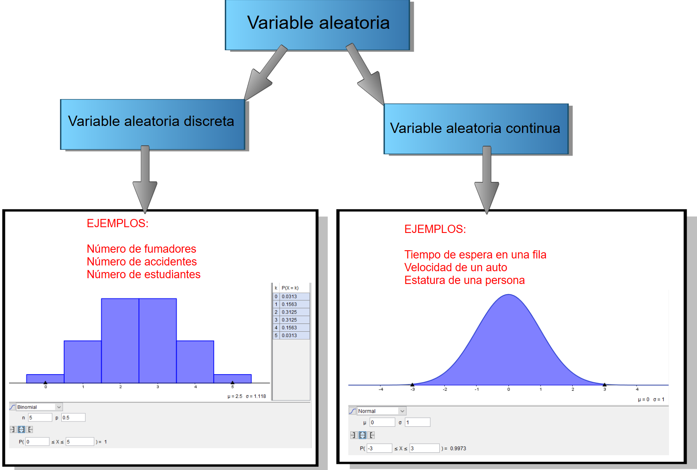
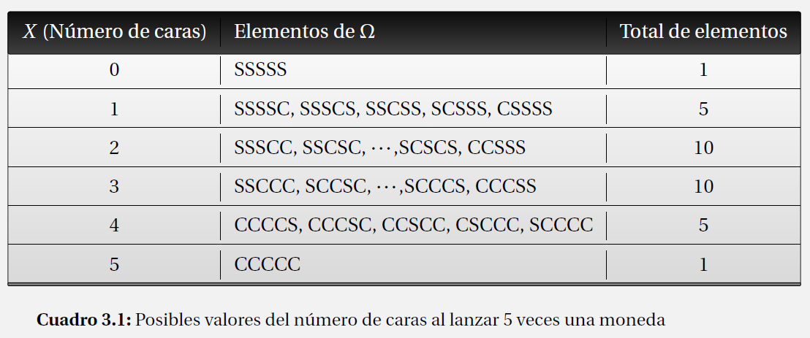
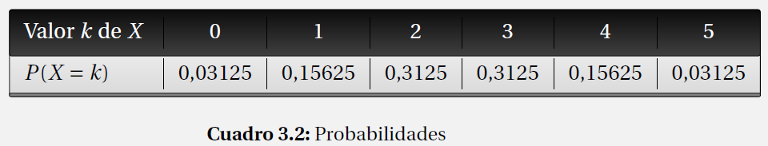
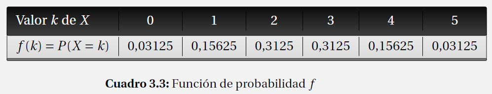
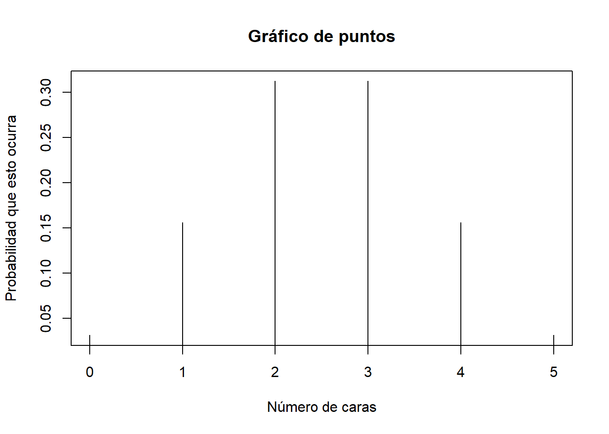
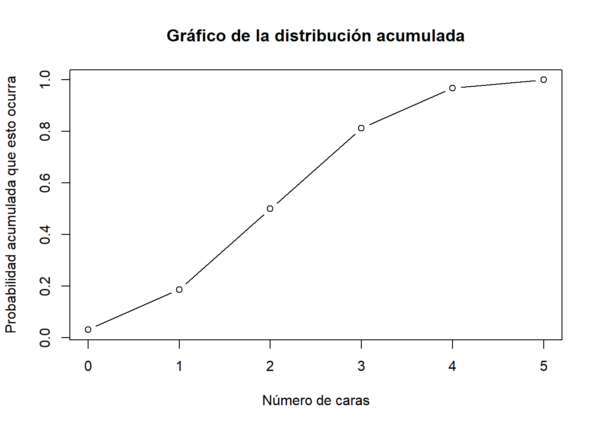
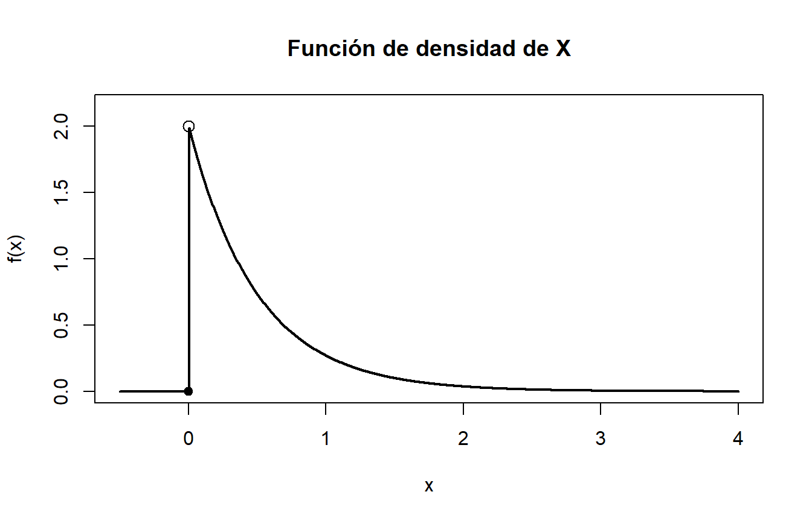
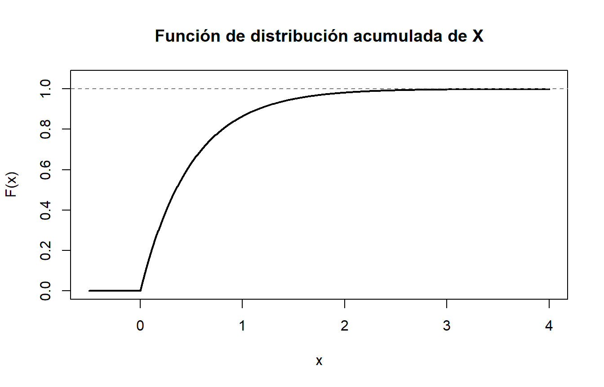
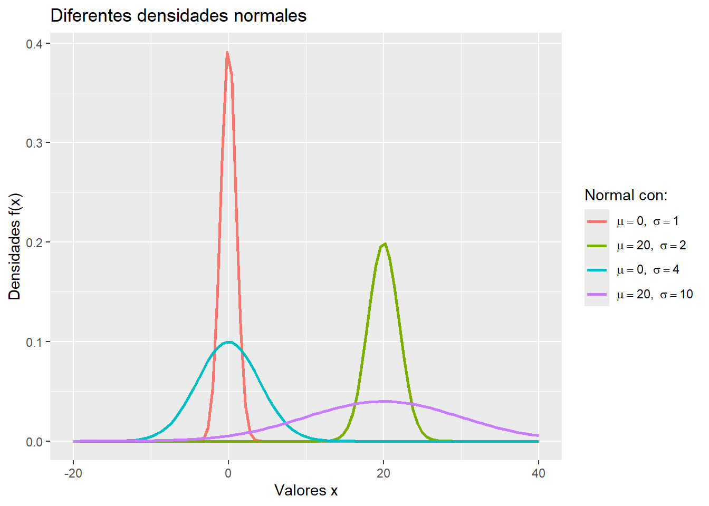
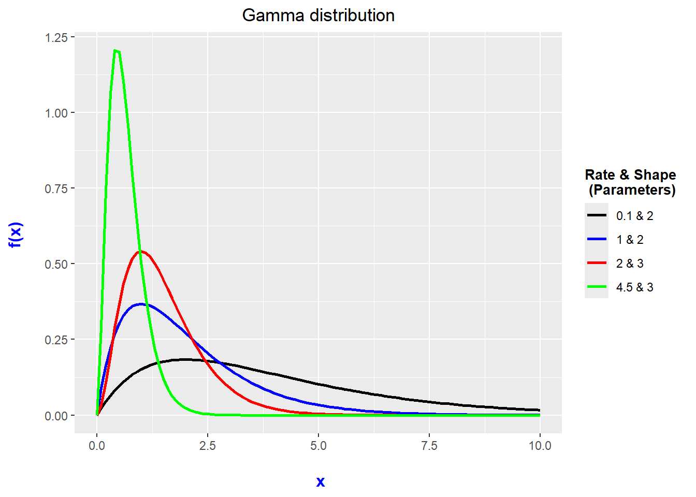

tosscoin <- function(n) {
df <- expand.grid(replicate(n, c("H", "T"), simplify = FALSE),
KEEP.OUT.ATTRS = FALSE,
stringsAsFactors = FALSE)
names(df) <- paste0("X", seq_len(n))
return(df)
}DISTRIBUCIONES DE PROBABILIDAD EN R
Caso univariado

About these lecture notes. These notes introduce discrete random variables, probability mass functions, cumulative distribution functions, expectation, variance, and applications with R.
1 Paquetes
En R podemos encontrar diversas funciones para ello:
expand.griden el paquetebasede R.combnen el paquetecombinat.
2 Funciones
Para nuestros cálculos, utilizaremos la función expand.grid. En este caso, creamos la siguientes CINCO funcione: tosscoin(n), rolldie(n), isin(), urnsamples() y nsamp(). Se describirán a continuación.
2.0.1 Función tosscoin(n)
La idea de esta función es generar el espacio muestral de lanzar una moneda exactamente \(n\) veces, con valores cara (H) y sello (T):
2.0.2 Función rolldie(n)
Con ella se genera el espacio muestral al lanzar un dado exactamente \(n\) veces, con valores de 1 a 6 por lanzamiento.
rolldie <- function(n, sides = 6, makespace = FALSE) {
df <- expand.grid(replicate(n, 1:sides, simplify = FALSE),
KEEP.OUT.ATTRS = FALSE)
names(df) <- paste0("X", seq_len(n))
if (makespace) {
df$prob <- rep(1 / nrow(df), nrow(df)) # Agrega la columna de probabilidad
}
return(df)
}NOTA: En esta función, makespace = TRUE agregará una columna de probabilidades (prob = 1/n) al espacio muestral, para convertirlo en un “objeto tipo espacio de probabilidad”.
2.0.3 Función isin()
Con ella se verifica si ciertos valores están presentes en cada fila de una matriz o data frame. Se puede usar con o sin tener en cuenta el orden.
isin <- function(x, table, ordered = FALSE) {
# Si x es un vector, lo convertimos en una matriz con una sola fila
if (is.vector(x)) {
x <- matrix(x, nrow = 1)
}
# Validación
if (!is.data.frame(x) && !is.matrix(x)) stop("x debe ser un vector, data.frame o matriz")
# Aplicar fila por fila
apply(x, 1, function(row) {
row_vals <- as.character(row)
tab_vals <- as.character(table)
if (ordered) {
# Buscar subsecuencia exacta
len_row <- length(row_vals)
len_tab <- length(tab_vals)
if (len_tab > len_row) return(FALSE)
for (i in 1:(len_row - len_tab + 1)) {
if (all(row_vals[i:(i + len_tab - 1)] == tab_vals)) return(TRUE)
}
return(FALSE)
} else {
# Verificar si todos los valores de 'table' están presentes (sin importar orden)
all(tab_vals %in% row_vals)
}
})
}2.0.4 Función urnsamples()
Esta función genera todas las muestras posibles de una urna según estos cuatro escenarios:
- x: Representa la urna desde la cual se va a hacer el muestreo.
- size: Tamaño de la muestra.
- replace: TRUE, si es con reemplazo; y FALSE, sin reemplazo.
- ordered: TRUE, si es con orden; y FALSE, sin orden.
urnsamples <- function(x, size, ordered = TRUE, replace = FALSE) {
if (ordered) {
# Producto cartesiano
expand.grid(replicate(size, x, simplify = FALSE),
KEEP.OUT.ATTRS = FALSE)
} else {
# Combinaciones sin orden
combn(x, size, simplify = FALSE) |>
do.call(what = rbind)
}
}2.0.5 Función nsamp()
Esta función calcula cuántas formas distintas hay de tomar \(k\) elementos de una población de n elementos, bajo distintas condiciones:
n: Tamaño de la población (elementos disponibles).k: Tamaño de la muestra-replace = FALSE: Sin reemplazo (sin repetir elementos).ordered = TRUE: Orden importa (permuta, no combina).
nsamp <- function(n, k, replace = FALSE, ordered = TRUE) {
if (ordered) {
if (replace) {
return(n^k) # Producto cartesiano con repetición
} else {
return(factorial(n) / factorial(n - k)) # Permutaciones sin repetición
}
} else {
if (replace) {
return(choose(n + k - 1, k)) # Combinaciones con repetición
} else {
return(choose(n, k)) # Combinaciones sin repetición
}
}
}3 Variable aleatoria
Se resalta que una variable aleatoria no es una probabilidad y, generalmente, se simbolizan con las últimas letras mayúsculas de nuestro alfabeto.
Una variable aleatoria \(X\) es una función \(X: \Omega \to R\), siendo \(R\) el conjunto de los números reales.
Las variables aleatorias se clasifican en discretas o continuas.
Las variables discretas son las que tienen una cantidad o finita o (infinita) enumerable de valores.
Las variables continuas tienen una cantidad infinita no enumerable de valores.
En la figura de abajo se muestran algunos ejemplos de ambos tipos de variables.
En las secciones siguientes, solo se explicarán los conceptos relacionados con el caso discreto. El caso continuo se tratará en otros documentos.

4 Variable aleatoria discreta
4.0.1 Función de probabilidad
4.0.1.1 Definición de \(f\)
Es una función \(f: R \to [0,1]\) tal que
\[ f(x) \;= \; \left\{ \begin{array}{ll} P(X=x), & \text{si }x=x_1,x_2,\ldots; \\ 0, & \hbox{de otra forma.} \\ \end{array} \right. \]
4.0.1.2 Propiedades de \(f\)
Algunas propiedades de \(f\) son las siguientes:
\(f(x) \geq 0\) para todo valor \(x\) real.
\(\sum\limits_{x\in R} f(x) =1\), siendo \(R\) el conjunto de los números reales.
La gráfica de \(f\) se puede representar a través de un histograma de probabilidad o de un gráfico lineal.
A continuación, algunos ejemplos de representaciones gráficas de \(f\).

4.0.2 Función de distribución acumulada
4.0.2.1 Definición de \(F\)
Es una función \(F: R \to [0,1]\) definida por \[F(t)\; =\; P(X\leq t) \;= \; \sum\limits_{x; \, x\leq t} f(x), \quad \text{para todo }t\text{ real.}\]
4.0.2.2 Propiedades de \(F\)
Algunas propiedades de \(f\) son las siguientes:
\(0\leq F(t)\leq 1\).
\(F\) es creciente.
\(F\) es escalonada.
\(F\left(\lim\limits_{t\to\infty} t\right)=1\).
\(F\left(\lim\limits_{t\to-\infty} t\right)=0\).
A continuación, algunos ejemplos de representaciones gráficas de \(F\).

4.0.3 Más propiedades
\(P(X=a)\) no siempre es cero.
\(P(a<X\leq b) = F(b)-F(a)\).
\(P(a\leq X\leq b) \ne F(b)-F(a)\).
\(P(a\leq X \leq b) \ne P(a< X \leq b)\).
Si \(a^{-}\) es el valor máximo posible de \(X\) que es estrictamente menor que \(a\), entonces, \[f(a) \,= \; F(a) - F(a^{-})\]
4.0.4 Esperanza y varianza
4.0.4.1 Definiciones
La espezanza de \(X\) se define así: \[\mu\; = \; E(X) \;= \; \sum\limits_k x_k \cdot f(x_k)\]
La varianza de \(X\) se define así: \[\sigma^2 \;= \; V(X) \;= \; \sum\limits_k (x_k-\mu)^2 \cdot f(x_k).\]
4.0.4.2 Propiedades
Algunas propiedades de la esperanza y varianza son las siguientes:
\(E(aX + b) \,=\, a E(X) \,+\, b\).
\(V(aX + b) \,=\, a^2 V(X)\).
\(V(X)\,=\, E(X^2) \,-\, \big[E(X)\big]^2\), donde \(E(X^2) \;= \; \sum\limits_k x_k^2 \cdot f(x_k)\).
5 Ejemplo (caso discreto): Enunciado
Supóngase que una moneda se lanza 5 veces y sea \(X\) la variable aleatoria que representa el número de caras que resultan.
¿Cuáles son los posibles valores \(k\) de \(X\)?
Halle la probabilidad de que \(X\) tome cada uno de esos valores \(k\) de la parte (a).
Construya la función de probabilidad \(f\) de \(X\).
Haga un bosquejo de la representación gráfica de \(f\).
Construya la función de distribución acumulada \(F\) de \(X\).
Haga un bosquejo de su representación gráfica de \(F\).
Halle la probabilidad de que el número de caras sea menor o igual que 3.
Halle la probabilidad de que el número de caras sea mayor que 2.
Halle la probabilidad de que \(X\) se encuentre entre 1 y 4 (ambos inclusive).
Halle la probabilidad de \(X\) se encuentre entre 1 y 4 (ambos no inclusive).
Halle la esperanza de \(X\).
Halle la esperanza de \(X^2\).
Encuentre la varianza de \(X\).
6 Ejemplo (caso discreto): Solución
6.0.1 Solución parte (a)
Al lanzar 5 caras, los elementos y el tamaño del espacio muestral \(\Omega\) se pueden encontrar así:
Omega <- tosscoin(5) #A) Espacio muestralEl número de elementos que tiene el espacio muestral \(\Omega\) es:
\[\#\Omega= 1+5+10+10+5+1 = 32, \quad \mbox{o, que es lo mismo}, \quad \# \Omega = 2^5 = 32\]
Comprobando con R, vemos que \(\Omega\) tiene 32 elementos:
w <- nrow(Omega); w #B) Tamaño del espacio muestral## [1] 32En forma resumida, los elementos de \(\Omega\) y los posibles valores de \(X\) se encuentran en la tabla de abajo:

El total de elementos que aparecen en la última columna se hallan en R de la siguiente manera:
k <- c(0, 1, 2, 3, 4, 5) #C) Número de caras
Conteo <- choose(5,k); Conteo #D) ## [1] 1 5 10 10 5 1En conclusión, los posibles valores de \(X\) son: 0, 1, 2, 3, 4, 5.
6.0.2 Solución parte (b)
Las probabilidades solicitadas se describen a continuación:
Probabilidad de que salga 0 cara: \[P(X=0) = P(SSSSS) = \frac{1}{32} = 0.03125\]
Probabilidad de que salga 1 cara: \[P(X=1) = P(SSSSC, SSSCS, SSCSS, SCSSS, CSSSS) = \frac{5}{32} = 0.15625\]
Probabilidad de que salgan 2 caras: \[P(X=2) = P(SSSCC, SSCSC, \cdots,SCSCS, CCSSS) = \frac{10}{32} = 0.3125\]
Probabilidad de que salgan 3 caras: \[P(X=3) = P(SSCCC, SCCSC, \cdots,SCCCS, CCCSS) = \frac{10}{32} = 0.3125\]
Probabilidad de que salgan 4 caras: \[P(X=4) = P(CCCCS, CCCSC, CCSCC, CSCCC, SCCCC) = \frac{5}{32} = 0.15625\]
Probabilidad de que salgan 5 caras: \[P(X=5) = P(CCCCC) = \frac{1}{32}= 0.03125\]
En R se pueden calcular así:
probabilidad_b <- Conteo/w
probabilidad_b## [1] 0.03125 0.15625 0.31250 0.31250 0.15625 0.03125Estas probabilidades se pueden resumir en la tabla que se indica abajo:

6.0.3 Solución parte (c)
Debido a que \(f(k) = P(X=k)\), la función de probabilidad \(f\) coincide con las probabilidades halladas en el inciso anterior, como se muestra en la tabla de abajo.

En R se pueden calcular así:
f <- probabilidad_b; f## [1] 0.03125 0.15625 0.31250 0.31250 0.15625 0.031256.0.4 Solución parte (d)
El bosquejo de la gráfica de \(f\) se puede representar de dos maneras: como un gráfico de líneas o como un histograma de probabilidad.
plot(k, f, type="h", main= "Gráfico de puntos",xlab = "Número de caras",
ylab = "Probabilidad que esto ocurra" )

6.0.5 Solución parte (e)
Recordemos que la función de distribución acumulada \(F\) se define como: \[F(t)\; =\; P(X\leq t) \;= \; \sum\limits_{x; \, x\leq t} f(x), \quad \text{para todo }t\text{ real.}\]
Hallaremos \(F\) en tres pasos:
PRIMER PASO: Consideremos solo los valores de \(X\), que son 0, 1, 2, 3, 4, 5.
\[\begin{eqnarray*} F(0) &=& P(X\leq 0) = P(X=0) = f(0) =0.03125. \\ && \\ F(1) &=& P(X\leq 1) = P(X=0)+P(X=1) = f(0)+ f(1) = 0,03125 + 0,15625 = 0.1875.\\ && \\ F(2) &=& P(X\leq 2) = P(X=0)+\cdots +P(X=2) = f(0) + \cdots +f(2) = 0.03125 + \cdots + 0.3125= 0.5.\\ &&\\ F(3) &=& P(X\leq 3) = P(X=0)+\cdots +P(X=3) = f(0) + \cdots +f(3)= 0.03125 +\cdots + 0.3125= 0.8125.\\ && \\ F(4) &=& P(X\leq 4) = P(X=0)+\cdots +P(X=4) = f(0) + \cdots +f(4)= 0.03125 +\cdots + 0.15625= 0.96875.\\ && \\ F(5) &=& P(X\leq 5) = P(X=0)+\cdots +P(X=5) = f(0) + \cdots +f(5)= 0.03125 +\cdots + 0.03125= 1. \end{eqnarray*}\]
SEGUNDO PASO: Consideremos números reales \(t\) diferente de los valores de \(X\) (0, 1, 2, 3, 4, 5) y utilizaremos siempre valores de prueba (el que usted quiera seleccionar). Aquí consideraremos 7 regiones.
Región 1: Supongamos que \(t<0\):
Tomamos un valor de prueba que esté en este intervalo. Por ejemplo, puede ser -2:
\[F(-2) = P(X\leq -2) = 0\]
ya que no hay valores de \(X\) que sean negativos.
Región 2: Supongamos que \(0<t<1\):
Tomamos un valor de prueba que esté en este intervalo. Por ejemplo, puede ser 0.6:
\[F(0.6) = P(X\leq 0.6) = P(X=0) = 0.03125\]
ya que el único valor de \(X\) menor o igual que 0.6 es 0.
Región 3: Supongamos que \(1<t<2\):
Tomamos un valor de prueba que esté en este intervalo. Por ejemplo, puede ser 1.2:
\[F(1.2) = P(X\leq 1.2) = P(X=0)+P(X=1) = 0.1875\]
ya que los únicos valores de \(X\) menores o iguales que 1.2 son 0 y 1.
Región 4: Supongamos que \(2<t<3\):
Tomamos un valor de prueba que esté en este intervalo. Por ejemplo, puede ser 2.4:
\[F(2.4) = P(X\leq 2.4) = P(X=0)+\cdots +P(X=2) = 0.5\]
ya que los únicos valores de \(X\) menores o iguales que 2,4 son 0 , 1 y 2.
Región 5: Supongamos que \(3<t<4\):
Tomamos un valor de prueba que esté en este intervalo. Por ejemplo, puede ser 3.5:
\[F(3.5) = P(X\leq 3.5) = P(X=0)+\cdots +P(X=3) = 0.8125\]
ya que los únicos valores de \(X\) menores o iguales que 3.5 son 0, 1, 2 y 3.
Región 6: Supongamos que \(4<t<5\):
Tomamos un valor de prueba que esté en este intervalo. Por ejemplo, puede ser 4.1:
\[F(4.1) = P(X\leq 4.1) = P(X=0)+\cdots +P(X=4) = 0.96875\]
ya que los únicos valores de \(X\) menores o iguales que 4.1 son 0, 1, 2, 3 y 4.
Región 7: Supongamos que \(5<t\):
Tomamos un valor de prueba que esté en este intervalo. Por ejemplo, puede ser 7:
\[F(7) = P(X\leq 7) = P(X=0)+\cdots +P(X=5) = 1\]
ya que todos los valores de \(X\) son menores o iguales que 7.
TERCER PASO: Reunimos los pasos 1 y 2:
\[F(t) = \left\{ \begin{array}{ll} 0; & \text{si }t<0; \\ 0.03125; & \text{si }0\leq t<1; \\ 0.1875; & \text{si }1\leq t<2; \\ 0.5; & \text{si }2\leq t<3; \\ 0.8125; & \text{si }3\leq t<4; \\ 0.96875; & \text{si }4\leq t<5. \\ 1; & \text{si }5\leq t. \end{array} \right.\]
En R:
Dist_Acum <- cumsum(f)
Dist_Acum## [1] 0.03125 0.18750 0.50000 0.81250 0.96875 1.000006.0.6 Solución parte (f)
El bosquejo de la gráfica de \(F\) se puede representar de dos maneras: como un gráfico de líneas o como una gráfica de una función escalonada.
plot(k, Dist_Acum, type="b", main= "Gráfico de la distribución acumulada",xlab = "Número de caras",
ylab = "Probabilidad acumulada que esto ocurra" )

6.0.7 Solución parte (g)
La probabilidad de que el número de caras sea menor o igual que 3 es: \[P(X\leq 3) \; = \; F(3) \; = \; 0.8125 \] En R:
t <- 3
probabilidad_g <- Dist_Acum[t+1]
probabilidad_g## [1] 0.81256.0.8 Solución parte (h)
La probabilidad de que el número de caras sea mayor que 2 es: \[P(X>2) \; = \; 1- P(X\leq 2) \; = \; 1- F(2) \; = \; 1- 0.5 \; = \; 0.5\]
t <- 2
probabilidad_h <- 1- Dist_Acum[t+1]
probabilidad_h## [1] 0.56.0.9 Solución parte (i)
La probabilidad de que \(X\) se encuentre entre 1 y 4 (ambos inclusive) se puede hallar de dos maneras:
Primera forma: Utilizando \(f\).
\[P(1 \leq X \leq 4) \; = \; P(X=1, 2, 3, 4)\; = \; f(1) + f(2) + f(3) + f(4)\; = 0.9375\]
En R:
x <- 1:4
c <- f[x+1]
probabilidad_i <- sum(c)
probabilidad_i## [1] 0.9375Segunda forma: Utilizando \(F\).
\[\begin{eqnarray*} P(1 \leq X \leq 4) &=& P(X=1, 2, 3, 4)\; = \; P(X=0, 1, 2, 3, 4)\, - \, P(X=0) \\ &=& P(X\leq 4) \, - \, P(X\leq 0) \; = \; F(4) \, - \, F(0) \; = \; 0.96875 \, - \, 0.03125 \; = \; 0.9375 \end{eqnarray*}\]
a <- 0
b <- 4
probabilidad_i <- Dist_Acum[b + 1] - Dist_Acum[a +1]
probabilidad_i## [1] 0.93756.0.10 Solución parte (j)
La probabilidad de \(X\) se encuentre entre 1 y 4 (ambos no inclusive) se puede hallar de dos maneras:
Primera forma: Utilizando \(f\). \[P(1 < X < 4) \; = \; P(X= 2, 3)\; = \; f(2) + f(3) \; = 0.625\]
En R:
x <- 2:3
c <- f[x+1]
probabilidad_j <- sum(c)
probabilidad_j## [1] 0.625Segunda forma: Utilizando \(F\). \[\begin{eqnarray*} P(1 < X < 4) &=& P(X=2, 3)\; = \; P(X=0, 1, 2, 3)\, - \, P(X=0, 1) \\ &=& P(X\leq 3) \, - \, P(X\leq 1) \; = \; F(3) \, - \, F(1) \; = \; 0.8125 \, - \, 0.1875 \; = \; 0.625 \end{eqnarray*}\]
a <- 1
b <- 3
probabilidad_i <- Dist_Acum[b + 1] - Dist_Acum[a +1]
probabilidad_i## [1] 0.6256.0.11 Solución parte (k)
Recuerde que la esperanza de \(X\) está definida por \[E(X) \;= \; \sum\limits_k k \cdot f(k)\]
En este ejemplo, \[\begin{eqnarray*} E(X) &=& (0)f(0) + (1) f(1)+ \cdots + (5)f(5) \\ &=& 0.00000 + 0.15625 + 0.62500 + 0.93750+ 0.62500 + 0.15625 \\ &=& 2.5 \end{eqnarray*}\]
En R:
E <- k*f
Esperanza <- sum(E)
Esperanza## [1] 2.56.0.12 Solución parte (l)
La esperanza de \(X^2\) se calcula por \[E(X^2) \;= \; \sum\limits_{k=1}^K k^2 \cdot f(k)\]
En este ejemplo,
\[\begin{eqnarray*} E(X^2) &=& (0^2)f(0) + (1^2) f(1)+ \cdots + (5^2)f(5) \\ &=& 0.00000 + 0.15625 + 1.25000 + 2.81250 + 2.50000 + 0.78125\\ &=& 7.5 \end{eqnarray*}\]
En R:
E2 <- k^2*f
Esperanza2 <- sum(E2)
Esperanza2## [1] 7.56.0.13 Solución parte (m)
Recuerde que la varianza de \(X\) se puede calcular así (de dos maneras equivalentes):
\[V(X) \;= \; \sum\limits_{k=1}^K (k-E(X))^2 \cdot f(k)\,=\, E(X^2) \,-\, \big[E(X)\big]^2\]
En este ejemplo, sin utilizar la propiedad, obtenemos:
\[\begin{eqnarray*} V(X) &=& \sum\limits_k (k-E(X))^2 \cdot f(k)\\ &=& 0.1953125 + 0.3515625 + 0.0781250 + 0.0781250 + 0.3515625 + 0.1953125 \\ &=& 1.25 \end{eqnarray*}\]
En R:
V <- (k-Esperanza)^2*f
Varianza <- sum(V)
Varianza## [1] 1.25Con la propiedad se obtiene el mismo resultado:
\[V(X) \,=\, E(X^2) \,-\, \big[E(X)\big]^2 \;= \; 7.5 - (2.5)^2 \;= \;1.25\]
En R:
Varianza <- Esperanza2 - (Esperanza)^2
Varianza## [1] 1.257 Variable aleatoria continua
7.0.1 Función de densidad
7.0.1.1 Definición de \(f\)
Una función \(f:\mathbb{R}\to[0,\infty)\) es una función de densidad de probabilidad de la variable aleatoria continua \(X\) si cumple las siguientes condiciones:
Para cualesquiera números reales \(a\leq b\),
\[P(a\leq X\leq b)=\int_a^b f(x)\,dx.\]
El área total bajo la gráfica de \(f\) es igual a 1, es decir,
\[\int_{-\infty}^{\infty}f(x)\,dx=1.\]
La gráfica de \(f\) es una curva. La función \(f\) es no negativa, pero puede tomar valores mayores que 1.
7.0.2 Función de distribución acumulada
7.0.2.1 Definición de \(F\)
Es una función \(F:\mathbb{R}\to[0,1]\) definida por
\[F(t)=P(X\leq t)=\int_{-\infty}^{t}f(x)\,dx,\quad \text{para todo }t\text{ real.}\]
7.0.2.2 Propiedades de \(F\)
Algunas propiedades de \(F\) son las siguientes:
\(0\leq F(t)\leq 1\).
\(F\) es creciente (no decreciente).
\(F\) es continua.
\(\displaystyle\lim_{t\to\infty}F(t)=1\).
\(\displaystyle\lim_{t\to-\infty}F(t)=0\).
7.0.3 Más propiedades
Para una variable aleatoria continua con función de densidad \(f\):
\(P(X=a)=0\), para cualquier valor real \(a\).
\(P(a<X\leq b)=F(b)-F(a)\).
\(P(a\leq X\leq b)=F(b)-F(a)\).
\(P(a\leq X\leq b)=P(a<X\leq b)=P(a\leq X<b)=P(a<X<b)\).
Si \(F\) es derivable en \(x\), entonces \(f(x)=F'(x)\) en los puntos donde la densidad coincide con esa derivada.
7.0.4 Esperanza y varianza
7.0.4.1 Definiciones
La esperanza de \(X\) se define así:
\[\mu=E(X)=\int_{-\infty}^{\infty}x\,f(x)\,dx.\]
La varianza de \(X\) se define así:
\[\sigma^2=V(X)=\int_{-\infty}^{\infty}(x-\mu)^2f(x)\,dx.\]
Estas expresiones se utilizan cuando las integrales correspondientes existen.
7.0.4.2 Propiedades
Algunas propiedades de la esperanza y varianza son las siguientes:
\(E(aX+b)=aE(X)+b\).
\(V(aX+b)=a^2V(X)\).
\(V(X)=E(X^2)-[E(X)]^2\), donde
\[E(X^2)=\int_{-\infty}^{\infty}x^2f(x)\,dx.\]
8 Ejemplo (caso continuo): Enunciado
Sea dada la siguiente función de densidad de una variable aleatoria continua \(X\):
\[ f(x)=\begin{cases} 2e^{-2x}, & \text{si }x>0,\\ 0, & \text{de otro modo.} \end{cases} \]
Verifique que \(f\) es en realidad una densidad de probabilidad.
Haga un bosquejo gráfico de \(f\).
Construya la función de distribución \(F\) correspondiente.
Haga un bosquejo gráfico de \(F\).
Halle la probabilidad de que \(X\) tome un valor menor o igual que 1.
Halle la probabilidad de que \(X\) tome un valor mayor que 1.
Halle la probabilidad de que \(X\) tome un valor igual a 1.
Halle la probabilidad de que \(X\) tome un valor entre 1 y 3 (ambos inclusive).
Halle la probabilidad de que \(X\) tome un valor entre 1 y 3 (ambos no inclusive).
Halle la esperanza de \(X\).
Halle la esperanza de \(X^2\).
Encuentre la varianza de \(X\).
9 Ejemplo (caso continuo): Solución
Antes de comenzar, definimos en R las funciones \(f\) y \(F\) que utilizaremos en los cálculos. La expresión de \(F\) se justificará en la parte (c).
f <- function(x) ifelse(x > 0, 2 * exp(-2 * x), 0)
F_acum <- function(x) ifelse(x > 0, 1 - exp(-2 * x), 0)9.0.1 Solución parte (a)
Para verificar que \(f\) es una función de densidad, comprobamos dos condiciones.
Primera condición: \(f(x)\geq 0\) para todo \(x\in\mathbb{R}\), porque \(2e^{-2x}>0\) cuando \(x>0\) y \(f(x)=0\) en los demás casos.
Segunda condición: el área total bajo la curva es 1:
\[ \begin{aligned} \int_{-\infty}^{\infty}f(x)\,dx &=\int_0^{\infty}2e^{-2x}\,dx\\ &=\left[-e^{-2x}\right]_0^{\infty}\\ &=0-(-1)=1. \end{aligned} \]
En R:
integrate(f, lower = 0, upper = Inf)## 1 with absolute error < 5e-07En conclusión, \(f\) es una función de densidad de probabilidad.
9.0.2 Solución parte (b)
La gráfica de \(f\) es una curva exponencial decreciente para \(x>0\). Su valor se aproxima a 2 cuando \(x\) se acerca a 0 por la derecha y tiende a 0 cuando \(x\) crece. Como \(f(0)=0\), se representa un círculo abierto en \((0,2)\) y uno cerrado en \((0,0)\).
En R:
curve(f(x), from = -0.5, to = 4, n = 1001,
xlab = "x", ylab = "f(x)", main = "Función de densidad de X",
lwd = 2, ylim = c(0, 2.15))
points(0, 2, pch = 1, cex = 1.3)
points(0, 0, pch = 19)
9.0.3 Solución parte (c)
Recuerde que la función de distribución acumulada se define por
\[F(t)=P(X\leq t)=\int_{-\infty}^{t}f(x)\,dx.\]
Si \(t\leq 0\), entonces \(F(t)=0\). Si \(t>0\),
\[ \begin{aligned} F(t)&=\int_0^t 2e^{-2x}\,dx\\ &=\left[-e^{-2x}\right]_0^t\\ &=1-e^{-2t}. \end{aligned} \]
Por tanto,
\[ F(t)=\begin{cases} 0, & t\leq 0,\\ 1-e^{-2t}, & t>0. \end{cases} \]
En R:
F_acum(c(-1, 0, 1, 2, 3))## [1] 0.0000000 0.0000000 0.8646647 0.9816844 0.99752129.0.4 Solución parte (d)
La función \(F\) es continua, no decreciente y se aproxima a 1 cuando \(t\) tiende a infinito.
En R:
curve(F_acum(x), from = -0.5, to = 4, n = 1001,
xlab = "x", ylab = "F(x)", main = "Función de distribución acumulada de X",
lwd = 2, ylim = c(0, 1.05))
abline(h = 1, lty = 2, col = "gray50")
9.0.5 Solución parte (e)
La probabilidad de que \(X\) sea menor o igual que 1 se calcula utilizando \(F\):
\[P(X\leq 1)=F(1)=1-e^{-2}\approx 0.864665.\]
En R:
probabilidad_e <- F_acum(1)
probabilidad_e## [1] 0.86466479.0.6 Solución parte (f)
La probabilidad de que \(X\) sea mayor que 1 se obtiene por complemento:
\[P(X>1)=1-F(1)=e^{-2}\approx 0.135335.\]
En R:
probabilidad_f <- 1 - F_acum(1)
probabilidad_f## [1] 0.13533539.0.7 Solución parte (g)
Como \(X\) es una variable aleatoria continua, la probabilidad en cualquier punto es cero. Por tanto,
\[P(X=1)=0.\]
En R, podemos comprobarlo mediante la diferencia \(F(1)-F(1)\):
probabilidad_g <- F_acum(1) - F_acum(1)
probabilidad_g## [1] 09.0.8 Solución parte (h)
La probabilidad de que \(X\) se encuentre entre 1 y 3, ambos inclusive, se calcula así:
\[ \begin{aligned} P(1\leq X\leq 3)&=F(3)-F(1)\\ &=(1-e^{-6})-(1-e^{-2})\\ &=e^{-2}-e^{-6}\approx 0.132856. \end{aligned} \]
En R:
probabilidad_h <- F_acum(3) - F_acum(1)
probabilidad_h## [1] 0.1328565También se puede verificar integrando la densidad entre 1 y 3:
integrate(f, lower = 1, upper = 3)## 0.1328565 with absolute error < 1.5e-159.0.9 Solución parte (i)
Como \(X\) es continua, incluir o excluir los extremos no modifica la probabilidad. En consecuencia,
\[ \begin{aligned} P(1<X<3)&=P(1\leq X\leq 3)\\ &=F(3)-F(1)\\ &=e^{-2}-e^{-6}\approx 0.132856. \end{aligned} \]
En R:
probabilidad_i <- F_acum(3) - F_acum(1)
probabilidad_i## [1] 0.13285659.0.10 Solución parte (j)
Recuerde que la esperanza de \(X\) se define por
\[E(X)=\int_{-\infty}^{\infty}x f(x)\,dx.\]
En este ejemplo,
\[ \begin{aligned} E(X)&=\int_0^{\infty}2xe^{-2x}\,dx\\ &=\left[-xe^{-2x}-\frac12e^{-2x}\right]_0^{\infty}\\ &=\frac12=0.5. \end{aligned} \]
En R:
Esperanza <- integrate(function(x) x * f(x), 0, Inf)$value
Esperanza## [1] 0.59.0.11 Solución parte (k)
La esperanza de \(X^2\) se calcula por
\[E(X^2)=\int_{-\infty}^{\infty}x^2f(x)\,dx.\]
En este ejemplo,
\[ \begin{aligned} E(X^2)&=\int_0^{\infty}2x^2e^{-2x}\,dx\\ &=\left[-e^{-2x}\left(x^2+x+\frac12\right)\right]_0^{\infty}\\ &=\frac12=0.5. \end{aligned} \]
En R:
Esperanza2 <- integrate(function(x) x^2 * f(x), 0, Inf)$value
Esperanza2## [1] 0.59.0.12 Solución parte (l)
Recuerde que la varianza de \(X\) se puede calcular de dos maneras equivalentes:
\[V(X)=\int_{-\infty}^{\infty}(x-E(X))^2f(x)\,dx =E(X^2)-[E(X)]^2.\]
Primera forma: utilizando la definición.
\[V(X)=\int_0^{\infty}\left(x-\frac12\right)^2 2e^{-2x}\,dx=\frac14.\]
En R:
Varianza1 <- integrate(function(x) (x - Esperanza)^2 * f(x),
0, Inf)$value
Varianza1## [1] 0.25Segunda forma: utilizando la propiedad.
\[V(X)=E(X^2)-[E(X)]^2=\frac12-\left(\frac12\right)^2=\frac14=0.25.\]
En R:
Varianza2 <- Esperanza2 - Esperanza^2
Varianza2## [1] 0.25En conclusión, la esperanza y la varianza son \(E(X)=0.5\) y \(V(X)=0.25\), respectivamente.
10 Distribuciones especiales discretas y continuas: Resumen
10.0.1 Discretas
En la tabla de abajo se presenta un resumen de las distribuciones discretas más importantes.
| Distribución | Función de probabilidad | Parámetros | E(X) | V(X) |
|---|---|---|---|---|
| Uniforme | $$f(x_k)=\frac{1}{n},\quad k=1,\ldots,n$$ | $$x_1\lt\cdots\lt x_n,\quad n\in\mathbb{N}$$ | $$\frac{1}{n}\sum_{k=1}^n x_k$$ | $$\frac{1}{n}\sum_{k=1}^n x_k^2-\left(\frac{1}{n}\sum_{k=1}^n x_k\right)^2$$ |
| De dos puntos | $$f(x_1)=p,\quad f(x_2)=1-p$$ | $$x_1\lt x_2,\quad 0\lt p\lt 1$$ | $$x_1p+x_2(1-p)$$ | $$(x_1-x_2)^2p(1-p)$$ |
| Bernoulli | $$f(0)=1-p,\quad f(1)=p$$ | $$0\lt p\lt 1$$ | $$p$$ | $$p(1-p)$$ |
| Binomial | $$f(k)=\binom{n}{k}p^k(1-p)^{n-k}$$ | $$0\lt p\lt 1,\quad n\in\mathbb{N}$$ | $$np$$ | $$np(1-p)$$ |
| Poisson | $$f(k)=\frac{e^{-\lambda}\lambda^k}{k!}$$ | $$\lambda\gt 0$$ | $$\lambda$$ | $$\lambda$$ |
| Hipergeométrica | $$f(k)=\frac{\binom{M}{k}\binom{N-M}{n-k}}{\binom{N}{n}}$$ | $$M\leq N,\quad n\leq N$$ | $$n\frac{M}{N}$$ | $$n\frac{M}{N}\left(1-\frac{M}{N}\right)\left(\frac{N-n}{N-1}\right)$$ |
| Binomial negativa | $$f(k)=\binom{k+r-1}{r-1}p^r(1-p)^k$$ | $$r\gt 0,\quad 0\lt p\lt 1$$ | $$\frac{r(1-p)}{p}$$ | $$\frac{r(1-p)}{p^2}$$ |
| Geométrica | $$f(k)=p(1-p)^k$$ | $$0\lt p\lt 1$$ | $$\frac{1-p}{p}$$ | $$\frac{1-p}{p^2}$$ |
10.0.2 Continuas
En la tabla de abajo se presenta un resumen de las distribuciones continuas más importantes.
| Distribución | Función de densidad | Parámetros | E(X) | V(X) |
|---|---|---|---|---|
| Uniforme | $$f(x)=\frac{1}{b-a},\quad a\lt x\lt b$$ | $$a\lt b$$ | $$\frac{a+b}{2}$$ | $$\frac{(b-a)^2}{12}$$ |
| Normal | $$f(x)=\frac{1}{\sqrt{2\pi\sigma^2}}e^{-\frac{(x-\mu)^2}{2\sigma^2}}$$ | $$\mu\in\mathbb{R},\quad \sigma^2\gt 0$$ | $$\mu$$ | $$\sigma^2$$ |
| Normal estándar | $$f(x)=\frac{1}{\sqrt{2\pi}}e^{-x^2/2}$$ | $$x\in\mathbb{R}$$ | $$0$$ | $$1$$ |
| Gamma | $$f(x)=\frac{x^{\alpha-1}e^{-x/\beta}}{\beta^\alpha\Gamma(\alpha)}$$ | $$\alpha\gt 0,\quad \beta\gt 0$$ | $$\alpha\beta$$ | $$\alpha\beta^2$$ |
| Exponencial | $$f(x)=\lambda e^{-\lambda x},\quad x\gt 0$$ | $$\lambda\gt 0$$ | $$\frac{1}{\lambda}$$ | $$\frac{1}{\lambda^2}$$ |
| t de Student | $$f(x)=\frac{\Gamma((n+1)/2)}{\sqrt{n\pi}\Gamma(n/2)}\left(1+\frac{x^2}{n}\right)^{-(n+1)/2}$$ | $$n\in\mathbb{N}$$ | $$0,\quad n\gt 1$$ | $$\frac{n}{n-2},\quad n\gt 2$$ |
| Chi-cuadrada | $$f(x)=\frac{x^{n/2-1}e^{-x/2}}{2^{n/2}\Gamma(n/2)}$$ | $$n\gt 0$$ | $$n$$ | $$2n$$ |
| F de Fisher | $$f(x)=\frac{\Gamma((m+n)/2)}{\Gamma(m/2)\Gamma(n/2)}\frac{(m/n)^{m/2}x^{m/2-1}}{(1+mx/n)^{(m+n)/2}}$$ | $$m,n\in\mathbb{N}$$ | $$\frac{n}{n-2},\quad n\gt 2$$ | $$\frac{2n^2(m+n-2)}{m(n-2)^2(n-4)},\quad n\gt 4$$ |
11 Distribución de funciones de variables aleatorias
11.0.1 Teorema de transformación (univariado)
Es importante anotar que si \(g\) es una función continua y \(X\) es una variable aleatoria, entonces, \(g(X)\) también es una variable aleatoria. Por esta razón, queremos expresar, para algunas funciones especiales \(f\), la función de distribución de \(Y:=g(X)\) a través de la función de distribución de \(X\).
Theorem 1 (Transformación) Sea \(X\) una variable aleatoria continua con densidad de probabilidad \(f_X\). Si \(g:\mathbb{R}\to \mathbb{R}\) es continuamente diferenciable sobre \(\mathbb{R}\) y \(g(x)\ne 0\) para todo \(x\in\mathbb{R}\), entonces la función de densidad de la variable \(Y=g(X)\) está dada por \[f_Y(x)= \left\{ \begin{array}{ll} f_X\big(h(x)\big)|h'(x)|, & \hbox{para todo $x$ en el rango de $g$;} \\ 0, & \hbox{de otro modo} \end{array} \right. \]
siendo \(h:=g^{-1}\) la inversa de \(g\).
Proof:
Se deja al lector. \(\blacksquare\)
11.0.2 Relaciones entre algunas distribuciones
Theorem 2 (Normal) Si \(X\) tiene distribución normal con parámetros \(\mu\) y \(\sigma^2\), es decir, \(X \stackrel{\atop d}{=} \mathcal{N}(\mu,\sigma^2)\), entonces,\(aX+b \stackrel{\atop d}{=} \mathcal{N}(a\mu+b, a^2\sigma^2)\), para todo \(a,b\in\mathbb{R}\).
Proof:
Como ejercicio. Aplicar el teorema Theorem 1. \(\blacksquare\)
A continuación, vemos algunas distribuciones normales.

Theorem 3 (Normal estándar) \(X\stackrel{\atop d}{=} \mathcal{N}(\mu,\sigma^2)\) si y sólo si \(\frac{X-\mu}{\sigma}\stackrel{\atop d}{=} \mathcal{N}(0,1)\).
Proof:
Como ejercicio. Aplicar el teorema Theorem 1. \(\blacksquare\)
Theorem 4 (Gamma) Sea \(X\) una variable aleatoria real. Sea \(\gamma\big(\alpha, \beta\big)\)la distribución gamma con parámetros\(\alpha\) y \(\beta\).
Si \(X \stackrel{\atop d}{=} \mathcal{N}(0,\sigma^2)\), entonces, \(X^2 \stackrel{\atop d}{=} \gamma\big(\frac{1}{2}, 2\sigma^2\big)\).
Si \(X \stackrel{\atop d}{=}\gamma(\alpha,\beta)\), entonces, \(cX \stackrel{\atop d}{=} \gamma(\alpha, c \,\beta)\), para todo \(c>0\).
Proof:
Como ejercicio. Aplicar el teorema Theorem 1. \(\blacksquare\)
A continuación, vemos algunas distribuciones gammas.

Theorem 5 (Chi-cuadrada) Supongamos que \(\chi^2 (n)\) representa la distribución chi-cuadrada con \(n\) grados de libertad.
\(\chi^2(n)=\gamma\left(\frac{n}{2}, 2\right)\).
Si \(X\stackrel{\atop d}{=} \mathcal{N}(0,1)\), entonces, \(X^2\stackrel{\atop d}{=} \chi^2(1)\).
Proof:
Como ejercicio. En la parte (b) aplicar el teorema Theorem 1. \(\blacksquare\)
A continuación, vemos algunas distribuciones chi-cuadradas.

12 Ejercicios (caso discreto)
12.0.1 Ejercicio 1
¿Son las siguientes afirmaciones verdaderas o falsas? Justifique cada respuesta.
Toda variable aleatoria es un número.
Si \(f\) es la función de probabilidad de una variable aleatoria discreta \(X\) y 0 es un posible valor de \(X\), entonces, \(f(0)=0\).
Para cualquier variable aleatoria discreta \(X\) se cumple que \(P(X=1)=1\), en donde 1 es un posible valor de \(X\).
Si \(F\) es la función de distribución acumulada de una variable aleatoria \(X\) discreta, entonces, \(F\) es una función escalonada.
Si \(X\) es una variable aleatoria discreta con función de distribución acumulada \(F\), entonces, se cumple que \(P(3\leq X<5)=F(5)-F(3)\).
Si \(X\) es cualquier variable aleatoria y si la variable aleatoria \(X+4\) tiene esperanza 1, entonces, la esperanza de \(X\) es
12.0.2 Ejercicio 2
Repita el ejemplo del caso discreto suponiendo que la moneda se lanza:
6 veces.
7 veces.
12.0.3 Ejercicio 3
Una pizzería, que atiende pedidos por correo, tiene cinco líneas telefónicas. Sea \(X\) la variable aleatoria que representa al número de líneas ocupadas en un momento específico. Supongamos que la función de probabilidad \(f\) de \(X\) está dada en tabla de abajo.
Calcule la probabilidad del siguiente evento: \(A =\) “a lo sumo 2 líneas están en uso”.
Calcule la probabilidad del siguiente evento: \(B =\) “menos de 4 líneas están en uso”.
Calcule la probabilidad del siguiente evento: \(C =\) “por lo menos 3 líneas están en uso”.
Calcule la probabilidad del siguiente evento: \(D =\) “entre 2 y 4 (ambos inclusive) líneas están en uso”.
Haga un bosquejo gráfico de \(f\).
Halle la función de distribución acumulada \(F\) de \(X\) y haga un bosquejo gráfico.
Halle la esperanza de \(X\).
Halle la varianza de \(X\).
| Valor x de X | 0 | 1 | 2 | 3 | 4 | 5 |
|---|---|---|---|---|---|---|
| f(x) | 0.20 | 0.25 | 0.10 | 0.15 | 0.09 | 0.21 |
12.0.4 Ejercicio 4
Considere la situación del ejercicio 3. Suponga que \(Y\) representa la variable aleatoria que representa al número de líneas desocupadas en un momento específico.
Halle la función de probabilidad de \(Y\) y haga un bosquejo gráfico de \(f\).
Calcule la probabilidad del siguiente evento: \(E =\) “entre 2 y 5 (ambos inclusive) líneas no están en uso”.
Calcule la probabilidad del siguiente evento: \(F =\) “por lo menos 3 líneas no están en uso”.
Halle la función de distribución acumulada \(F\) de \(Y\) y haga un bosquejo gráfico.
Halle la esperanza de \(Y\).
Halle la varianza de \(Y\).
12.0.5 Ejercicio 5
La función de probabilidad de la variable aleatoria \(X\) que representa al número de imperfecciones por 4 metros de un papel especial en rollos continuos de ancho uniforme, está dada por la tabla de abajo.
Haga un bosquejo gráfico de \(f\).
Halle la función de distribución acumulada \(F\) de \(X\) y represéntela gráficamente.
Halle la esperanza de \(X\).
Halle la varianza de \(X\).
| Valor x de X | 0 | 1 | 2 | 3 | 4 |
|---|---|---|---|---|---|
| f(x) | 0.21 | 0.28 | 0.10 | 0.,25 | 0.16 |
12.0.6 Ejercicio 6
Una fabricante de lapiceros tiene un programa de control de calidad que incluye la inspección de lapiceros recibidos para revisar que no tengan defectos. Supongamos que, en cierto día, él recibe lapiceros en lotes de cinco y se seleccionan dos lapiceros de un lote para inspeccionarlos. Podemos representar los posibles resultados del proceso de selección por pares. Por ejemplo, el par \((3,4)\) representa la selección de los lapiceros 3 y 4 para inspeccionarlos.
Haga una lista de los resultados diferentes.
Supongamos que los lapiceros 3 y 4 son los únicos defectuosos de un lote de cinco y se van a escoger dos lapiceros al azar. Defina la variable aleatoria \(X\) como el número de de lapiceros defectuosos observado entre los inspeccionados. Encuentre la función de probabilidad de \(X\) y represéntela gráficamente.
Encuentre la función de distribución acumulada \(F\) de \(X\) y represéntela gráficamente.
Halle la esperanza de \(X\).
Halle la varianza de \(X\).
12.0.7 Ejercicio 7
Considere la situación del ejercicio 6. Suponga que \(Y\) representa la variable aleatoria que representa al número de lapiceros no defectuosos.
Halle la función de probabilidad de \(Y\) y haga un bosquejo gráfico de \(f\).
Halle la función de distribución acumulada \(F\) de \(Y\) y haga un bosquejo gráfico.
Halle la esperanza de \(Y\).
Halle la varianza de \(Y\).
12.0.8 Ejercicios del 8 al 10
- Al invertir en unas acciones particulares, una persona puede tener una ganancia en un año de $8.000.000 con probabilidad de 0,4 o tener una pérdida de $2.000 con probabilidad de 0,6. ¿Cuál es la ganancia esperada de esta persona? Interprete su respuesta.
- Se sabe que en un grupo de cuatro componentes hay dos defectuosos. Una inspectora los prueba de uno en uno hasta encontrar las dos piezas defectuosas. Una vez que las localiza interrumpe las pruebas, pero examina la segunda pieza defectuosa por seguridad. Si \(X\) es el número de pruebas en la que se detecta la segunda pieza defectuosa, determine la función de probabilidad de \(X\).
- Para verificar la exactitud de sus estados financieros, las empresas a menudo emplean auditores que verifiquen sus ingresos. Los empleados de la empresa se equivocan al registrar los ingresos 5% de las veces. Suponga que un auditor revisa aleatoriamente tres ingresos y que la detección de los errores es independiente. Determine la función de probabilidad del número de errores detectado por el auditor.
12.0.9 Ejercicio 11
Se lanzan dos dados perfectos y se define la variable aleatoria \(X\) de la siguiente manera: \[X=\left\{ \begin{array}{ll} 2.000, & \hbox{si resultan 6 en ambos;} \\ 100, & \hbox{si resulta 6 sólo en uno;} \\ 0, & \hbox{si no resulta 6 en ninguno.} \end{array} \right.\]
Calcule las tres probabilidades que determinan la distribución de \(X\).
Calcule la esperanza de \(X\).
Supóngase que este experimento representa un juego, en el cual los valores de \(X\) significan la ganancia (en pesos) del jugador y donde el jugador tiene que pagar 100 (pesos) antes. Interprete el valor de \(E(X)\).
12.0.10 Ejercicios del 12 al 14
- En un grupo de cuatro piezas hay dos defectuosas. Una inspectora las prueba de una en una hasta encontrar las dos piezas defectuosas. Una vez que las localiza interrumpe las pruebas, pero examina la segunda pieza defectuosa por seguridad. Si \(X\) es el número de pruebas en la que se detecta la segunda pieza defectuosa, determine la función de probabilidad de \(X\).
- Un producto industrial se envía en lotes de 20 unidades. Efectuar pruebas para determinar si un artículo tiene defectos es costoso; así que el fabricante toma muestras de su producción en vez de probar el 100%. Un plan de muestreo elaborado para reducir al mínimo la cantidad de artículos defectuosos que se envían a los consumidores requiere que se muestreen 5 artículos de cada lote y el rechazo del lote completo si se encuentra más de un artículo defectuoso. Si el lote es rechazado, se prueba cada artículo del lote. Si un lote contiene 4 artículos defectuosos, ¿cuál es la probabilidad de que sea rechazado?
- Una empresa recibe un pedido de 1.000 artículos. Se analiza una muestra aleatoria de 15 artículos y se acepta el pedido si menos de tres resultan defectuosos. ¿Cuál es la probabilidad de aceptar un envío que contenga un 5% de artículos defectuosos?
12.0.11 Ejercicio 15
Una semilla tiene un porcentaje de germinación del 83%. Si se siembran 12 semillas, halle lo que se pide en los incisos de abajo. Sugerencia: defina \(X\)como el número de semillas germinadas y\(Y\) como el número de semillas no germinadas. Utilícelas en los incisos donde sea el caso.
La probabilidad de que germinen todas las semillas.
La probabilidad de que no germinen todas las semillas.
La probabilidad de que germinen 10 semillas.
La probabilidad de que no germinen 10 semillas.
La probabilidad de que germinen a lo sumo 10 semillas.
La probabilidad de que no germinen a lo sumo 10 semillas.
La probabilidad de que germinen menos de 7 semillas.
La probabilidad de que no germinen menos de 7 semillas.
La probabilidad de que germinen al menos 8 semillas.
La probabilidad de que no germinen al menos 8 semillas.
La probabilidad de que germinen más de 5 semillas.
La probabilidad de que no germinen más de 5 semillas.
La esperanza, varianza y desviación del número de semillas germinadas.
La esperanza, varianza y desviación del número de semillas no germinadas.
12.0.12 Ejercicio 16
De una producción de 8000 tornillos se sabe que el 5% está defectuosos. Supongamos que se selecciona un muestra al azar de 25 tornillos.
¿Cuál es la probabilidad de que el número de tornillos no defectuosos en la muestra no exceda a 8?
¿Cuál es la probabilidad de que el número de tornillos defectuosos en la muestra sea por lo menos 12?
¿Cuál es la probabilidad de que el número de tornillos no defectuosos en la muestra sea estrictamente mayor que 6 pero menor o igual a 20?
¿Cuál es la probabilidad de que ninguno de los tornillos esté defectuoso?
Calcule el valor esperado, la varianza y la desviación estándar del número de tornillos defectuosos en la muestra.
12.0.13 Ejercicio 17
De una producción de 9000 tornillos se sabe que el 87% no está defectuosos. Supongamos que se selecciona un muestra al azar de 33 tornillos.
¿Cuál es la probabilidad de que el número de tornillos defectuosos en la muestra no exceda a 9?
¿Cuál es la probabilidad de que el número de tornillos no defectuosos en la muestra sea por lo menos 11?
¿Cuál es la probabilidad de que el número de tornillos defectuosos en la muestra sea estrictamente mayor que 3 pero menor o igual a 18?
¿Cuál es la probabilidad de que ninguno de los tornillos no esté defectuoso?
Calcule el valor esperado, la varianza y la desviación estándar del número de tornillos no defectuosos en la muestra.
12.0.14 Ejercicio 18
En un peaje se cobra 6000 pesos por cada bus de transporte público y 9500 por carros particulares. Supongamos que durante las horas diurnas, de un total de 10000 de vehículos que pasa por el peaje, el 85% de todos los vehículos son carros particulares. Si 15 vehículos pasan por el peaje durante un período particular diurno,
¿Cuál es la probabilidad de que el número de carros particulares no exceda a 8?
¿Cuál es la probabilidad de que el número de transporte público es al menos 8?
¿Cuál es la probabilidad de que el número de transporte público en la muestra sea por lo menos 6?
¿Cuál es la probabilidad de que el número de carros particulares en la muestra sea estrictamente menor que 5 y menor o igual a 11?
¿Cuál es la probabilidad de que el número de transporte público en la muestra sea estrictamente mayor que 5 pero menor o igual a 11?
¿Cuál es la probabilidad de que todos los vehículos sean de transporte público?
¿Cuál es la probabilidad de el número de carros particulares en la muestra esté entre 5 y 12 (ambos inclusive)?
¿Cuál es la probabilidad de el número de transporte público en la muestra esté entre 5 y 12 (ambos no inclusive)?
¿Cuál es el ingreso de cuotas esperado?
12.0.15 Ejercicio 19
El propietario de un local comercial ha comprobado que el 20% de los clientes que entran allí hacen alguna compra. Cierta tarde, entraron \(n\)personas. Halle lo que se pide en los incisos de abajo para cada uno de los siguientes tres casos: CASO 1:\(n=6\), CASO 2:\(n=7\)y CASO 3:\(n=8\). Sugerencia: defina\(X\)como el número de clientes que hicieron alguna compra y\(Y\) como el número de clientes que no hicieron compra. Utilícelas en los incisos donde sea el caso.
La probabilidad de que todos los clientes no hicieron compra.
La probabilidad de que a lo sumo 5 clientes hicieron alguna compra.
La probabilidad de que menos de 3 clientes no hicieron compra.
La probabilidad de que al menos 3 clientes hicieron alguna compra.
La probabilidad de que más de 2 clientes no hicieron compra.
La probabilidad de el número de clientes en la muestra que hicieron alguna compra esté entre 3 y 10 (ambos inclusive)
La probabilidad de que el número de clientes en la muestra que no hicieron compra sea estrictamente mayor que 1 pero menor o igual a 4.
La probabilidad de que el número de clientes en la muestra que hicieron alguna compra sea estrictamente menor que 3 y menor o igual a 9.
La esperanza, varianza y desviación del número de clientes que no hicieron compra.
La esperanza, varianza y desviación del número de clientes que hicieron alguna compra.
12.0.16 Ejercicio 20
Suponga que los buses llegan a cierto terminal de transporte, según un proceso de Poisson, con tasa \(\alpha=8\) buses por hora, de modo que el número de llegadas por un período de \(t\) horas es una variable aleatoria de Poisson con parámetro \(\lambda=8t\).
¿Cuál es la probabilidad de que exactamente 5 buses pequeños lleguen durante un período de una hora? ¿Por lo menos 5? ¿A lo sumo 10?
¿Cuáles son el valor esperado y la desviación estándar del número de buses que llegan durante un período de 90 minutos?
¿Cuál es la probabilidad de que por lo menos 20 buses lleguen durante un período de 2 horas y media? ¿De que a lo sumo 10 lleguen durante este período?
12.0.17 Ejercicio 21
De las personas encarceladas que son sometidas a un detector de mentiras, 0.8% dicen la verdad. Supongamos que se escoge una muestra aleatoria de 500 encarcelados.
¿Cuál es la función de probabilidad aproximada del número muestreado que dice la verdad?
Calcule la probabilidad de que a lo más 5 personas de las 500 digan la verdad.
Calcule la probabilidad de que exactamente 5 personas de las 500 digan la verdad.
12.0.18 Ejercicio 22
Un fabricante de computadores se preocupa por el mal funcionamiento de cierto programa estadístico en un modelo en particular. El mal funcionamiento puede producir en raras ocasiones un bloqueo en el sistema operativo. Suponga que la distribución del número de computadores por año que tienen un mal funcionamiento del paquete estadístico es la de Poisson con \(\lambda=5\).
¿Cuál es la probabilidad de que a lo sumo dos computadores por año tengan un bloqueo en el sistema operativo?
¿Cuál es la probabilidad de que más de un computador por año tenga un bloqueo en el sistema operativo?
12.0.19 Ejercicio 23
El 10% de los motores armados en una fábrica de montaje están defectuosos. Si se seleccionan en forma aleatoria uno por uno y se prueban, calcule la probabilidad de localizar el tercer motor sin defecto:
En el quinto ensayo.
En el quinto ensayo o antes.
12.0.20 Ejercicio 24
De acuerdo con un estudio geológico, en un pozo de exploración petrolera hay 0.2 de probabilidad de encontrar petróleo.
Calcule la probabilidad de localizar petróleo por primera vez en el tercer pozo que se perfore.
Halle la esperanza y varianza del número de pozos perforados.
12.0.21 Ejercicio 25
Una pareja de esposo decide tener hijos hasta que tengan cuatro del mismo sexo.
Si se supone que la probabilidad de que nazca varón es 0.5, ¿cuál es la función de probabilidad del número de hijos de la pareja?
Halle la esperanza y varianza del número de hijos de la pareja.
12.0.22 Ejercicio 26
Tres hermanos y sus respectivas esposas deciden tener hijos hasta que cada familia tenga dos niñas.
¿Cuál es la función de probabilidad del número total de varones nacidos de los hermanos?
¿Cuál es la esperanza del número total de varones nacidos de los hermanos y cómo se compara con el número esperado de varones nacidos de cada hermano?
12.0.23 Ejercicio 27
Se sabe que en cierto proceso de fabricación, en promedio, uno de cada 100 artículos está defectuoso.
¿Cuál es la probabilidad de que el sexto artículo que se inspecciona sea el primer defectuoso que se encuentra?
Halle la esperanza y varianza del número del número de artículos inspeccionados.
12.0.24 Ejercicio 28
Suponga que el número de plantas de un tipo particular que se encuentra en una región rectangular de cierta área geográfica es una variable aleatoria \(X\) con función de probabilidad
\[ f(x)=\begin{cases} \dfrac{c}{x^3}, & \text{si }x=1,2,3,\ldots,\\ 0, & \text{de otro modo}. \end{cases} \]
Halle \(c\) para que \(f\) sea en realidad una función de probabilidad.
Halle \(E(X)\) y \(V(X)\).
12.0.25 Ejercicios del 29 al 33
- Encuentre la esperanza y varianza de una variable \(X\) si ésta se define de modo que
\[ E[(X-2)^2]=5, \qquad E[(X-4)^2]=5. \]
- Suponga que \(E(X)=5\) y \(E[X(X-1)]=27.5\). Calcule \(E(X^2)\) y \(V(X)\).
Demuestre que la función de distribución acumulada \(F\) de una variable aleatoria discreta \(X\) es una función no decreciente, es decir, si \(x_1<x_2\), entonces \(F(x_1)\leq F(x_2)\). ¿En qué condición será \(F(x_1)=F(x_2)\)?
Demuestre que \(E(aX+b)=aE(X)+b\) y \(V(aX+b)=a^2V(X)\).
Para \(n\) fija, ¿hay valores de \(p\) con \(0\leq p\leq 1\) para los cuales \(V(X)=0\)? ¿Para qué valor de \(p\) es \(V(X)\) máxima? Explique.
12.0.26 Ejercicios del 34 al 36
Si \(X\) es una variable aleatoria binomial con parámetros \(n\) y \(p\), demuestre que \(E(X)=np\) y \(V(X)=np(1-p)\).
Si \(X\) tiene distribución hipergeométrica con parámetros \(n\), \(M\) y \(N\), demuestre que
\[ E(X)=n\cdot\frac{M}{N} \qquad\text{y}\qquad V(X)=\left(\frac{N-n}{N-1}\right)\cdot n\cdot\frac{M}{N}\cdot\left(1-\frac{M}{N}\right). \]
- Si \(X\) tiene distribución de Poisson con parámetro \(\lambda\), demuestre que \(E(X)=V(X)=\lambda\).
13 Ejercicios (caso continuo)
13.0.1 Ejercicio 1
En una fábrica se estudia la proporción de material aprovechable obtenida de un proceso de producción. Sea \(X\) dicha proporción, cuya función de densidad se propone como
\[ f(x)=\begin{cases} k\sqrt{x+1}, & \text{si }0<x<1,\\ 0, & \text{de otro modo}. \end{cases} \]
Encuentre el valor de \(k\) para que \(f\) sea una función de densidad de probabilidad.
Construya la función de distribución acumulada \(F\).
Calcule la esperanza, la varianza y la desviación estándar de \(X\).
Grafique \(f\) y \(F\) e interprete los resultados en términos de la proporción de material aprovechable.
13.0.2 Ejercicio 2
La proporción de personas que responden a cierta encuesta enviada por correo es una variable aleatoria continua \(X\) que tiene la función de densidad
\[ f(x)=\begin{cases} \dfrac{2(x+1)}{3}, & \text{si }0<x<1,\\ 0, & \text{de otro modo}. \end{cases} \]
Haga un bosquejo de la gráfica de \(f\).
¿Cuál es la probabilidad de que la proporción de personas que responden a la encuesta sea mayor del \(40\%\)? ¿Y de que esté entre el \(30\%\) y el \(80\%\)?
Construya la función de distribución acumulada \(F\).
Calcule \(E(X)\), \(V(X)\) y \(\sigma_X\) e interprete sus valores.
Grafique \(F\) y compare su comportamiento con el de \(f\).
13.0.3 Ejercicio 3
El número total de horas, medido en unidades de 10 horas, que una familia utiliza una lavadora en un período de 6 meses es una variable aleatoria continua \(X\) con función de densidad
\[ f(x)=\begin{cases} x, & \text{si }0<x<1,\\ 2-x, & \text{si }1\leq x<2,\\ 0, & \text{de otro modo}. \end{cases} \]
Haga un bosquejo de la gráfica de \(f\).
¿Cuál es la probabilidad de que en un período de 6 meses una familia utilice su lavadora menos de 15 horas? ¿Y entre 5 y 12 horas? Recuerde que \(X\) está expresada en unidades de 10 horas.
Construya la función de distribución acumulada \(F\).
Calcule \(E(X)\), \(V(X)\) y \(\sigma_X\), y exprese la esperanza y la desviación estándar también en horas.
Grafique \(F\) e interprete los resultados.
13.0.4 Ejercicio 4
El tiempo de culminación \(X\) de cierto proyecto financiero tiene una función de distribución acumulada \(F\) dada por
\[ F(t)= \begin{cases} 0, & \text{si } t<0,\\[6pt] \dfrac{t^2}{3}, & \text{si } 0\leq t<1,\\[8pt] 1-\dfrac{1}{24}(t-3)^2, & \text{si } 1\leq t\leq \dfrac{7}{3},\\[8pt] 1, & \text{de otra forma}. \end{cases} \]
Obtenga la función de densidad \(f\) de \(X\) y construya su gráfica.
Calcule la probabilidad de que el tiempo de culminación del proyecto financiero se encuentre entre \(0.5\) y \(2\).
Calcule el tiempo esperado de culminación del proyecto financiero, \(E(X)\), e interprete su resultado.
Calcule la varianza \(V(X)\) y la desviación estándar \(\sigma_X\) del tiempo de culminación del proyecto financiero. Interprete los resultados.
Construya la gráfica de la función de distribución acumulada \(F\) e interprete su comportamiento.
13.0.5 Ejercicio 5
Suponga que la temperatura de reacción (en grados centígrados) de cierto proceso químico es una variable aleatoria continua \(X\) con función de densidad
\[ f(x)=\begin{cases} 1-x, & \text{si }-k\leq x\leq k,\\ 0, & \text{de otra manera}. \end{cases} \]
Halle el valor de \(k\) para que \(f\) sea en realidad una densidad y, luego, trace la gráfica de \(f\).
Calcule la probabilidad de que la temperatura de reacción sea estrictamente positiva.
Calcule la probabilidad de que la temperatura de reacción se encuentre entre \(0\) y \(1/2\) grados centígrados.
Calcule la probabilidad de que la temperatura de reacción sea menor que \(-1/4\) grados centígrados o mayor que \(1/4\) grados centígrados.
Construya \(F\), calcule \(E(X)\), \(V(X)\) y \(\sigma_X\) y grafique \(F\).
13.0.6 Ejercicio 6
Supongamos que la función de densidad
\[ f(x)=\begin{cases} \dfrac{x}{2}, & \text{si }0\leq x\leq 2,\\ 0, & \text{de otra manera} \end{cases} \]
es la de una variable aleatoria \(X\) que representa el tiempo de préstamo de un libro, disponible durante 2 horas en la biblioteca de una universidad, solicitado por un estudiante seleccionado al azar.
¿Cuál es la probabilidad de que el libro sea prestado durante al menos 1 hora? ¿Entre media hora y hora y media? ¿Más de una hora y media?
Construya \(F\) y grafíquela.
Halle la duración mediana del tiempo de préstamo de libros.
Calcule \(E(X)\), \(V(X)\) y \(\sigma_X\), en horas.
Grafique \(f\) e interprete los resultados.
13.0.7 Ejercicio 7
Un profesor universitario nunca termina su clase antes de que suene la campana y la finaliza a más tardar 2 minutos después. Sea \(X\) el tiempo (en minutos) que transcurre entre la campana y el término de la clase, y suponga que la función de densidad de \(X\) es
\[ f(x)=\begin{cases} kx^2, & \text{si }0\leq x\leq 2,\\ 0, & \text{de otra manera}. \end{cases} \]
Encuentre el valor de \(k\) y luego grafique \(f\).
Construya \(F\) y grafíquela.
Calcule la probabilidad de que el profesor termine la clase durante el primer minuto después de la campana y la probabilidad de que tarde más de 1.5 minutos.
Calcule \(E(X)\), \(V(X)\) y \(\sigma_X\) e interprete los resultados en minutos.
13.0.8 Ejercicio 8
Supongamos que el peso de un bebé recién nacido (en kilogramos) puede considerarse como una variable aleatoria continua \(X\) con función de densidad \(f\) definida por
\[ f(x)=\begin{cases} k[1-(x-3)^2], & \text{si }2\leq x\leq 4,\\ 0, & \text{de otra manera}. \end{cases} \]
Encuentre el valor de \(k\) y luego haga un bosquejo de la gráfica de \(f\).
¿Cuál es la probabilidad de que el peso de un bebé recién nacido sea mayor que 3 kilogramos?
¿Cuál es la probabilidad de que el peso de un bebé recién nacido sea menor que 3.5 kilogramos?
¿Cuál es la probabilidad de que el peso de un bebé recién nacido se encuentre entre 3 y 3.5 kilogramos?
Construya \(F\), calcule \(E(X)\), \(V(X)\) y \(\sigma_X\) y grafique \(F\).
13.0.9 Ejercicio 9
Supongamos que la siguiente función de densidad \(f\), definida por
\[ f(x)=\begin{cases} xe^{-x^2/2}, & \text{si }x>0,\\ 0, & \text{de otra manera}, \end{cases} \]
es la de una variable aleatoria \(X\) que representa el esfuerzo vibratorio (en libras por pulgadas cuadradas) en la aleta de un abanico, a una velocidad particular.
Verifique que \(f\) es en realidad una función de densidad.
¿Cuál es la probabilidad de que el esfuerzo vibratorio de la aleta sea a lo sumo 2 libras por pulgada cuadrada? ¿Y de que esté entre 1 y 2?
Encuentre la función de distribución acumulada de \(X\).
Calcule \(E(X)\), \(V(X)\) y \(\sigma_X\) e interprete los resultados.
Grafique \(f\) y \(F\) en un intervalo suficientemente amplio para apreciar su comportamiento.
13.0.10 Ejercicio 10
La duración en horas de una batería es una variable aleatoria continua \(X\) con función de distribución acumulada
\[ F(t)=\begin{cases} 1-e^{-t/20}, & \text{si }t>0,\\ 0, & \text{de otro modo}. \end{cases} \]
Grafique \(F\).
Determine la función de densidad \(f\) de \(X\) y grafíquela.
Determine la probabilidad de que la duración de tal batería exceda 50 horas.
Calcule \(E(X)\), \(V(X)\) y \(\sigma_X\) e interprete los resultados en horas.
13.0.11 Ejercicio 11
Sea \(X\) una variable aleatoria que tiene distribución exponencial con parámetro \(\lambda > 0\).
Demuestre que su función de densidad \(f\) es realmente una densidad.
Encuentre una fórmula (y demuéstrela) para los valores \(F(t)\) de la función de distribución acumulada \(F\) y para \(P(X \geq t)\).
Con base en el inciso anterior, halle \(F(-3)\) y \(P(X \geq -3)\).
Demuestre que \(P(X \geq x+z \mid X \geq x)=P(X \geq z)\), para todo \(x,z > 0\).
13.0.12 Ejercicios 12
Se ha comprobado que el tiempo que tardan los contribuyentes en diligenciar el formulario para la declaración de renta sigue una distribución normal con media 100 minutos y desviación estándar 30 minutos. a) ¿Cuál es la probabilidad de un contribuyente elegido al azar tarde entre 70 y 130 minutos en diligenciar este formulario? b) Halle el valor de k tal que el 5% de los contribuyentes tarda más de k minutos en diligenciar el formulario. c) Se eligen 50000 contribuyentes al azar. ¿Aproximadamente cuántos tardan más de 1 hora en diligenciar el formulario? d) Se eligen 7 contribuyentes al azar. ¿Cuál es la probabilidad que entre 3 y 5 de ellos tarde más de 2 horas en diligenciar el formulario?
13.0.13 Ejercicios 13
Se estima que la cantidad de dinero que gastan en gasolina los clientes de una estación de servicio sigue una distribución normal con desviación estándar de 15000 pesos. a) Halle el valor de la media si se ha encontrado que el 4% de los clientes gasta más de 70000 pesos. b) Use el valor de la media hallada en (a) para calcular la probabilidad de que un cliente elegido al azar gaste entre 35000 y 40.000 pesos. c) Encuentre el valor de k para que 0.10 sea la probabilidad de que un cliente elegido al azar gaste un valor que excede a la media encontrada en la parte (a) en por lo menos k unidades? d) Se eligen 7 clientes al azar. ¿Cuál es la probabilidad que menos de 5 de ellos gaste más de 50000 pesos?
13.0.14 Ejercicios 14
Un grupo grande de estudiantes hace un examen de economía. Las notas se distribuyen según una normal con media 3.2. a) Halle la desviación estándar si se sabe que la probabilidad de que un estudiante elegido al azar obtenga una nota menor que 4,5 es 0.9332. b) ¿Cuál es la probabilidad que un estudiante elegido al azar obtenga una nota entre 3.5 y 4.0? c) Halle el valor de k tal que la probabilidad de que un estudiante elegido al azar obtenga una nota mayor que k se de 0.78. d) Se eligen 5 clientes al azar. ¿Cuál es la probabilidad de que al menos 2 de ellos obtenga más de 2.8 en el examen?
13.0.15 Ejercicios 15
Una empresa ofrece a sus empleados un seguro de atención dental. Un estudio reciente demuestra que el costo anual por empleado tuvo una distribución normal, con media de 1280 USD y una desviación estándar de 420 USD anuales a) ¿Cuál es la probabilidad de que un empleado elegido al azar gaste entre 1500 y 2000 USD anuales en gastos dentales? b) ¿Cuánto es el costo mínimo para estar en el 10% más alto por atención dental anual? c) Si se eligen 8.000 empleados al azar, ¿aproximadamente cuántos gastan más de 1800 USD? d) Si se eligen 7 empleados al azar, ¿cuál es la probabilidad de que entre 3 (no inclusive) y 6 (inclusive) de ellos gasten entre 1800 USD y 2000 USD?
13.0.16 Ejercicios 16
Un administrador estima el costo de ejecutar determinadas labores como una variable normal con media 500000 COP y desviación estándar de 50000 COP. a) ¿Cuál es la probabilidad de que una labor elegida al tenga un costo entre 150000 y 200000 COP? b) ¿Cuánto es el costo mínimo para estar en el 15% más alto por cada labor? c) Se eligen al azar 30000 de estas labores (independientes). ¿Aproximadamente cuántas tienen un costo mayor que 460000 COP?
d) Se eligen al azar 6 de estas labores (independientes), ¿cuál es la probabilidad de que entre 2 y 5 (ambos inclusive) tengan un costo entre 300000 y 460000 COP?
13.0.17 Ejercicios 17
El precio de las acciones de un banco al final de cada jornada de comercialización del año previo se rigió por una distribución normal. Suponga que durante el año hubo 240 jornadas de comercialización, que el precio medio fue de $42 por acción y la desviación estándar, de $2.25.
Halle la probabilidad de que, en una jornada seleccionada al azar, el precio de las acciones sea más de $50.
¿Cuántas jornadas calcularía usted tuvo un precio por acción que osciló entre $40 y$45?
¿Cuál fue el precio de las acciones que se mantuvo más alto 25% de las jornadas?
Halle la probabilidad de que en al menos 100 jornadas el precio de la acción osciló entre $25 y$45.
13.0.18 Ejercicios 18
El tiempo de vida de un neumático puede representarse mediante una distribución normal con media 35000 kilómetros y desviación estándar de 4000 kilómetros.
Halle la probabilidad de que el tiempo de un neumático sea más de 30000 kilómetros.
Halle el valor de k tal que la probabilidad de que el tiempo de vida de un neumático sea menor que k es 0.95.
Se toma una muestra de 80000 de estos neumáticos. ¿Aproximadamente cuántos tienen un tiempo de vida superior a los 38000 kilómetros?
Se toma una muestra de 5 de estos neumáticos. ¿Cuál es la probabilidad (aproximada) de que entre 1 (inclusive) y 4 (no inclusive) de ellos tengan un tiempo de vida inferior a los 40000 kilómetros?
13.0.19 Ejercicios 19
Los puntos en una prueba de aptitud se distribuyen según una normal con media 420 y desviación típica 80.
Si se elige una persona al azar, ¿cuál es la probabilidad de que obtenga una puntuación entre 400 y 500?
¿Cuál es la mínima puntuación necesaria para estar entre el 10% mejor?
Para una persona elegida al azar, sin hacer los cálculos, determinar en cuál de los siguientes intervalos es más probable que esté su puntuación: 400-440, 440-480.
Si se eligen 5 personas al azar, ¿cuál es la probabilidad de que al menos 2 obtenga más de 500 puntos?
13.0.20 Ejercicios 20
Una determinada librería recientemente inaugurada ofrece, además de la propia consulta de libros, los servicios de cafetería. Para una próxima exposición en la Feria del libro, la empresa ha decidido solicitar a una fábrica textil la elaboración de camisetas promocionales de la librería. La fábrica textil, decide hacer camisetas de tres tallas: L, XL, XXL. Dado que todas las camisetas serán bastante anchas, lo que hará optar por una talla u otra será la altura. Para ello, la fábrica, tras realizar el estudio pertinente, concluye que las alturas de los posibles compradores potenciales seguirán una distribución normal, con media 165,4 cm. y desviación estándar 8,3 cm.
Supongamos que la fábrica ya tiene los patrones hechos, y recomienda la talla L hasta 161 cm., talla XL hasta 179 cm. y talla XXL para alturas superiores. Bajo estas condiciones, ¿qué proporción de camisetas de cada tipo es razonable que se fabriquen?
Supongamos, ahora, que por razones de mercado, la empresa cree conveniente fabricar el 15% de camisetas de la talla L, el 63% de la talla XL y el 22% restante de la talla XXL. ¿Cuáles serán los límites de alturas con que se tendría que diseñar cada talla?
Supongamos que se escoge una muestra de 5 patrones ya hechos. ¿Cuál es la probabilidad de que al menos 2 de las camisetas fabricadas tengan una talla L hasta 163 cm.
Supongamos que se escoge una muestra de 30000 patrones ya hechos. ¿Aproximadamente cuántas camisetas tienen una talla L entre 160 y 162 cm.
13.0.21 Ejercicios 21
Se supone que los resultados de un examen tienen una distribución normal con una media de 4.0 y una desviación estándar de 0.3.
¿Cuál es la probabilidad de que una persona que presenta el examen obtenga calificación mayor que 3.6?
Suponga que a los estudiantes que se encuentran en el 10% de la parte superior de la distribución se le asigna una A. ¿Cuál es la calificación mínima que debe obtener un estudiante para tener una calificación de A?
¿Cuál debe ser la mínima calificación aprobatoria si el evaluador pretende que solamente el 28.1% de los estudiantes apruebe?
Si 1000 estudiantes presentan el examen, ¿cuántos estudiantes tienen calificaciones que exceden por los menos en 0.5 a la calificación reprobatoria del 25% (de calificaciones inferiores)?
13.0.22 Ejercicios 22
Un abogado se traslada diariamente desde su casa (en los suburbios) a su oficina en el centro de la ciudad. En promedio, el viaje le toma 24 minutos con una desviación estándar de 3.8 minutos. Asuma que la distribución de los tiempos de traslado está normalmente distribuida.
Si la oficina abre a las 9:00 a.m y él sale de su casa a las 8:45 a.m diariamente, ¿qué porcentaje de las veces llega tarde a su trabajo?
Si deja su casa a las 8:35 a.m y en la oficina se sirve un café entre las 8:50 y las 9:00 a.m, ¿cuál es la probabilidad de que le sirvan el café?
Encuentre el periodo por encima del cual se encuentra el 15% de los traslados más lentos.
Suponga que se toma una muestra de 5 viajes que ha realizado el abogado. Si el abogado siempre sale de su casa a las 8:30 a.m, calcule la probabilidad de que en al menos 2 viajes haya llegado entre las 9:05 a.m. y 9:20 a.m.
13.0.23 Ejercicios 23
De una producción de 6000 tornillos se sabe que el 4% está defectuosos. Supongamos que se selecciona un muestra al azar de 33 tornillos.
¿Cuál es la probabilidad de que el número de tornillos no defectuosos en la muestra no exceda a 27?
¿Cuál es la probabilidad de que el número de tornillos defectuosos en la muestra sea por lo menos 18?
¿Cuál es la probabilidad de que el número de tornillos no defectuosos en la muestra sea estrictamente mayor que 2 pero menor o igual a 19?
¿Cuál es la probabilidad de que más de 25 de los tornillos esté defectuoso?
13.0.24 Ejercicios 24
Un fabricante de celulares desea controlar la calidad de su producto y rechazar cualquier lote en el que la proporción de celulares defectuosos sea demasiado alta. Con este fin, de un lote de 30.000 celulares selecciona y prueba 35. Si por lo menos 4 de éstos están defectuosos, todo el lote será rechazado. Suponga que 20% de los celulares de todo el lote está defectuoso.
¿Cuál es la probabilidad de que el lote sea rechazado?
¿Cuál es la probabilidad de que en la muestra haya entre 14 y 18 celulares defectuosos (ambos inclusive)?
¿Cuál es la probabilidad de que en la muestra haya más de 17 celulares defectuosos?
¿Qué sucedería con la probabilidad de la parte (a) si el número crítico para rechazo aumentara de 4 a 5?
13.0.25 Ejercicios 25
Una institución de beneficiencia contrata personal para que soliciten donaciones por teléfono. Después de un breve período de preparación, las personas telefonean a los potenciales donantes y se les paga una comisión. La experiencia indica que normalmente estas personas logran sólo un éxito moderado, y el 80% de 4000 de ellas deja el trabajo en las tres primeras semanas. La institución contrata 36 personas, las cuales se pueden considerar como una muestra aleatoria.
¿Cuál es la probabilidad de que menos de 22 personas dejen el trabajo en las tres primeras semanas?
¿Cuál es la probabilidad de que más de 28 personas no dejen el trabajo en las primeras tres semanas?
¿Cuál es la probabilidad de que al menos 24 personas dejen el trabajo en las tres primeras semanas?
¿Cuál es la probabilidad de que a lo más 22 o más de 26 personas no dejen el trabajo en las tres primeras semanas?
13.0.26 Ejercicios 26
Una empresa se dedica a la instalación de nuevos paquetes computacionales. Se ha comprobado que en el 15% de 2500 instalaciones es necesario volver para realizar algunas modificaciones. En una semana determinada se realizaron 35 instalaciones. Asumir independencia en los resultados de esas instalaciones.
¿Cuál es la probabilidad de que sea necesario no volver en menos de 28 casos?
¿Cuál es la probabilidad de que no sea necesario volver entre 18 y 35 (ambos inclusive) de los casos?
¿Cuál es la probabilidad de que sea necesario no volver en más de 27 casos?
¿Cuál es la probabilidad de que sea necesario volver en menos de 22 casos o más de 26 casos?
- Al realizar una entrevista a un grupo de personas con el fin de ingresar en un programa de televisión, se encuentra que 30% de 1500 personas no cumplen con los requisitos requeridos. Se entrevistan a 34 personas.
- ¿Cuál es la probabilidad de que menos de 24 cumplan con los requisitos requeridos?
- ¿Cuál es la probabilidad de que de 14 a 27 no cumplan con los requisitos requeridos?
- ¿Cuál es la probabilidad de que más de 26 cumplan con los requisitos requeridos?
- ¿Cuál es la probabilidad de que menos de 23 o más de 29 no cumplan con los requisitos requeridos?
13.0.27 Ejercicios 27
Una investigación en cierto país arrojó que aproximadamente 80% de 1000 personas cree el actual presidente de ese país está haciendo las cosas bien. Se seleccionan 33 personas al azar.
¿Cuál es la probabilidad de que al menos 26 no sean de esta opinión?
¿Cuál es la probabilidad de que menos de 16 sean de esta opinión?
¿Cuál es la probabilidad de que a lo más 27 no sean de esta opinión?
¿Cuál es la probabilidad de que más de 19 sean de esta opinión?
13.0.28 Ejercicios 28
Una tienda de deportes generalmente compra lotes grandes de cierta marca de balones de fútbol. Se sabe generalmente que 70% de un lote de 20.000 balones no está defectuoso. Se utiliza un método que rechaza un lote si se encuentran 4 o más unidades defectuosas en una muestra aleatoria de 35 unidades.
¿Cuál es la probabilidad de aceptar el lote?
¿Cuál es la probabilidad de que en la muestra haya menos de 27, pero más de 33 unidades no defectuosas?
¿Cuál es la probabilidad de que en la muestra a lo más 26 unidades defectuosas?
¿Qué sucedería con la probabilidad de la parte (a) si el número crítico para rechazo disminuyera de 4 a 3?
13.0.29 Ejercicios 29
Cada uno de los 9000 computadores de cierta marca ha sido devuelto a un proveedor debido al mal funcionamiento de ciertos programas bajo un determinado sistema operativo. Supongamos que el 24% de estos computadores tienen problemas con la memoria RAM y los otros tienen problemas con los ejecutables EXE. Si se examinan al azar y con reemplazo 33 de estos computadores:
¿Cuál es la probabilidad de que menos de la mitad de los computadores tengan problemas con la memoria RAM?
¿Cuál es la probabilidad de que más de 18 computadores tengan problemas con la memoria EXE?
¿Cuál es la probabilidad de que estrictamente entre 21 y 25 de los computadores tengan problemas con la memoria RAM?
¿Cuál es la probabilidad de que menos 25 o más de 27 de los computadores tengan problemas con la memoria EXE?
13.0.30 Ejercicios 30
Se embarcan ventiladores eléctricos en un lote de 7500. Antes de aceptar un lote, un inspector elige 33 de esos ventiladores y los inspecciona. Si 1 o menos de los probados está defectuoso, el lote será aceptado; si 2 o más tienen defectos, se revisará todo el lote. Suponga que en todo el lote el 20% de los ventiladores está deficiente.
¿Cuál es la probabilidad de que no se necesite un 100% de inspección?
¿Cuál es la probabilidad de que más de 22 ventiladores estén defectuosos?
¿Cuál es la probabilidad de que al menos 25 ventiladores no estén defectuosos?
¿Cuál es la probabilidad de que menos 14 o más de 26 ventiladores estén defectuosos?
13.0.31 Ejercicios 31
Una empresa recibe un pedido de 7000 artículos que contiene el 25% de artículos defectuosos. Se analiza una muestra aleatoria de 37 artículos y se acepta el pedido si menos de 2 resultan defectuosos.
¿Cuál es la probabilidad de aceptar el pedido?
¿Cuál es la probabilidad de que menos de la mitad estén defectuosos?
¿Cuál es la probabilidad de que más de la mitad no estén defectuosos?
¿Cuál es la probabilidad de que menos 23 o más de 27 de artículos no estén defectuosos?
13.0.32 Ejercicios 32
Un producto industrial se envía en lotes de 6500 unidades. Efectuar pruebas para determinar si un artículo tiene defectos es costoso; así que el fabricante toma muestras de su producción en vez de probar el 100%. Un plan de muestreo elaborado para reducir al mínimo la cantidad de artículos defectuosos que se envían a los consumidores requiere que se muestreen 38 artículos del lote y el rechazo del lote completo si se encuentra más de 3 artículos defectuosos. Si el lote es rechazado, se prueba cada artículo del lote. Suponga que el 60% de los artículos del lote no están defectuosos.
¿Cuál es la probabilidad de que no se necesite un 100% de inspección?
¿Cuál es la probabilidad de que entre 25 (no inclusive) y 28 (inclusive) artículos estén defectuosos?
¿Cuál es la probabilidad de que al menos 36 artículos no estén defectuosos?
¿Cuál es la probabilidad de que menos 23 o más de 30 de artículos no estén defectuosos?
14 Ejercicios (teorema de transformación)
14.0.1 Ejercicio 1
Sea \(X\) una variable aleatoria real que tiene distribución exponencial con parámetro \(\lambda\). Hallar la correspondiente densidad de la variable aleatoria \(Y=3X\). Hágalo de dos maneras:
Aplicando el teorema de transformación Theorem 1.
Calculando directamente la función de distribución acumulada \(F_Y(y) = P(Y \leq y)\), sin aplicar el teorema.
14.0.2 Ejercicio 2
Sea \(X\) una variable aleatoria real que tiene distribución exponencial con parámetro \(\lambda\). Hallar la correspondiente densidad de la variable aleatoria \(Y=X^2\). Hágalo de dos maneras:
Aplicando el teorema de transformación Theorem 1.
Calculando directamente la función de distribución acumulada \(F_Y(y) = P(Y \leq y)\), sin aplicar el teorema.
14.0.3 Ejercicio 3
Halle la densidad de \(Y=X^2\) si \(X\) es una variable aleatoria real con función de densidad dada por \[ f(x) = \frac{1}{\sqrt{2\pi}}e^{-x^2/2}, \quad x\in \mathbb{R}\]
14.0.4 Ejercicios del 4 al 8
- Distribución de \(Y=aX+b\) (caso discreto). Si \(X\) es una variable aleatoria discreta con función de distribución acumulada \(F_X\) y de probabilidad \(f_X\), entonces las siguientes funciones \(g:\mathbb{R}\to \mathbb{R}\) definen las variables aleatorias \(Y=g(X)\) con las funciones de distribución acumulada \(F_Y\) y de probabilidad \(f_Y\). Si \(Y=aX + b\) para todo \(a,b\in\mathbb{R}\), \(a\ne 0\), demuestre que \(f_Y(k)=f_X\big(\frac{k-b}{a}\big)\) para todo \(k\in \mathbb{R}\) y
\[F_Y(t)= \begin{cases} F_X\big(\frac{t-b}{a}\big) & \text{si $a>0$} \\ 1- F_X\big(\frac{t-b}{a}\big) + f_X\big(\frac{t-b}{a}\big) & \text{si $a<0$} \end{cases}\]
- Sea \(X\) una variable aleatoria que tiene función de probabilidad \(f_X\) dada por \(f_X(k) = {2\choose k} (0,3)^k(0,7)^{2-k}\), donde \(k\in \mathbb{N}\) y \(0\leq k\leq 2\). Si \(Y=2X\), encuentre: (a) La función de probabilidad \(f_Y\) de \(Y\); (b) La función de distribución acumulada \(F_Y\) de \(Y\).
- Distribución de \(Y=aX+b\) (caso continuo). Si \(X\) es una variable aleatoria continua con función de distribución \(F_X\) y densidad de probabilidad \(f_X\), entonces las siguientes funciones \(g:\mathbb{R}\to \mathbb{R}\) definen las variables aleatorias \(Y=g(X)\) con la función de distribución \(F_Y\) y de densidad de probabilidad \(f_Y\). Si \(Y=aX + b\) para todo \(a,b\in\mathbb{R}\), \(a\ne 0\), aplique el teorema de transformación para demostrar que \(f_Y(y)= \frac{1}{|a|}f_X\big(\frac{y-b}{a}\big)\) y \[F_Y(t)= \begin{cases} F_X\big(\frac{t-b}{a}\big) & \text{si $a>0$} \\ 1- F_X\big(\frac{t-b}{a}\big) & \text{si $a<0$} \end{cases}\]
- Resuelva nuevamente el ejercicio 6, calculando primero \(F_Y\) y luego \(f_Y\).
- Repita el ejercicio 6, pero ahora \(X\) tiene distribución exponencial con parámetro 2.
14.0.5 Ejercicios del 9 al 12
- Distribución de \(Y=aX^2\) para \(a>0\) (caso discreto). Si \(X\) es una variable aleatoria discreta con funciones de distribución \(F_X\) y de probabilidad \(f_X\), entonces las siguientes funciones \(g:\mathbb{R}\to \mathbb{R}\)definen las variables aleatorias\(Y=g(X)\) con la funciones de distribución \(F_Y\) y de probabilidad \(f_Y\). Si \(Y=a\,X^2\) para una constante \(a> 0\), demuestre que \[f_Y(k)= \begin{cases} 0, & \text{$k< 0$} \\ f_X(0), & \text{$k= 0$} \\ f_X(\sqrt{k/a}) + f_X(-\sqrt{k/a}), & \text{$k> 0$} \end{cases}\]
\[ F_Y(t)= \begin{cases} 0 & \text{$t< 0$} \\ f_X(0), & \text{$t= 0$} \\ F_X(\sqrt{t/a}) - F_X(-\sqrt{t/a}) + f_X(-\sqrt{t/a}), & \text{$t> 0$} \end{cases}\]
- Repita el ejercicio 9, pero ahora \(Y=2X^2\).
- Distribución de \(Y=aX^2\) para \(a<0\) (caso discreto). Si \(X\) es una variable aleatoria discreta con funciones de distribución \(F_X\) y de probabilidad \(f_X\), entonces las siguientes funciones \(g:\mathbb{R}\to \mathbb{R}\) definen las variables aleatorias \(Y=g(X)\) con la funciones de distribución \(F_Y\) y de probabilidad \(f_Y\). Si \(Y=a\,X^2\) para una constante \(a< 0\), demuestre que \[f_Y(k)= \begin{cases} 0, & \text{$k>0$} \\ f_X(0), & \text{$k= 0$} \\ f_X(\sqrt{k/a}) + f_X(-\sqrt{k/a}), & \text{$k< 0$} \end{cases}\]
\[ F_Y(t)= \begin{cases} 1- F_X(\sqrt{t/a}) + F_X(-\sqrt{t/a}) + f_X(\sqrt{t/a}), & \text{$t< 0$}\\ 1-f_X(0), & \text{$t= 0$} \\ 1, & \text{$t> 0$} \end{cases}\]
- Repita el ejercicio 11, pero ahora \(Y=-2X^2\).
14.0.6 Ejercicios del 13 al 19
- Distribución de \(Y=aX^2\) para \(a>0\) (caso continuo). Si \(X\) es una variable aleatoria continua con función de distribución \(F_X\) y densidad de probabilidad \(f_X\), entonces las siguientes funciones \(g:\mathbb{R}\to \mathbb{R}\) definen las variables aleatorias \(Y=g(X)\) con la función de distribución \(F_Y\) y densidad de probabilidad \(f_Y\). Si \(Y=a\,X^2\) para una constante \(a> 0\), aplique el teorema de transformación para demostrar que \[f_Y(y)= \begin{cases} 0, & \text{$y\leq 0$} \\ \frac{1}{2 a\sqrt{y/a}}[f_X(\sqrt{y/a}) + f_X(-\sqrt{y/a})], & \text{$y> 0$} \end{cases}\]
\[ F_Y(t)= \begin{cases} 0, & \text{$t\leq 0$} \\ F_X(\sqrt{t/a}) - F_X(-\sqrt{t/a}), & \text{$t> 0$} \end{cases}\]
- Resuelva nuevamente el 13, sin aplicar el de transformación, calculando primero \(F_Y\) y luego \(f_Y\).
- Repita el ejercicio 13, pero ahora \(X\) tiene distribución exponencial con parámetro 2. y \(Y=2X^2\).
- Distribución de \(Y=aX^2\) para \(a<0\) (caso continuo). Si \(X\) es una variable aleatoria continua con función de distribución \(F_X\) y densidad de probabilidad \(f_X\), entonces las siguientes funciones \(g:\mathbb{R}\to \mathbb{R}\) definen las variables aleatorias \(Y=g(X)\) con la función de distribución \(F_Y\) y densidad de probabilidad \(f_Y\). Si \(Y=a\,X^2\) para una constante \(a< 0\), aplique el teorema de transformación para demostrar que \[f_Y(y)= \begin{cases} 0, & \text{$y\geq 0$} \\ -\frac{1}{2 a\sqrt{y/a}}[f_X(\sqrt{y/a}) + f_X(-\sqrt{y/a})], & \text{$y< 0$} \end{cases}\]
\[ F_Y(t)= \begin{cases} 1, & \text{$t\geq 0$} \\ 1- F_X(\sqrt{t/a}) + F_X(-\sqrt{t/a}), & \text{$t< 0$} \end{cases}\]
- Resuelva nuevamente el 16, sin aplicar el teorema de transformación, calculando primero \(F_Y\) y luego \(f_Y\).
- Repita el ejercicio 16, pero ahora \(X\) tiene distribución exponencial con parámetro 2 y \(Y=-2X^2\).
- Distribución de \(Y=X^n\) (caso continuo). Si \(X\) es una variable aleatoria continua con función de distribución \(F_X\) y densidad de probabilidad \(f_X\), entonces las siguientes funciones \(g:\mathbb{R}\to \mathbb{R}\) definen las variables aleatorias \(Y=g(X) = X^n\). Halle la función de distribución acumulada \(F_Y\) y densidad de probabilidad \(f_Y\). Sugerencia: Distinga los caso \(n\) par y \(n\) impar.
14.0.7 Ejercicios del 20 al 23
- Distribución de \(Y=a|X|\) para \(a>0\) (caso discreto). Si \(X\) es una variable aleatoria discreta con funciones de distribución \(F_X\) y de probabilidad \(f_X\), entonces las siguientes funciones \(g:\mathbb{R}\to \mathbb{R}\) definen las variables aleatorias \(Y=g(X)\) con la funciones de distribución \(F_Y\) y de probabilidad \(f_Y\). Si \(Y=a|X|\) para una constante \(a> 0\), encuentre \(f_Y\) y \(F_Y\).
- Repita el ejercicio 20 con \(Y=2|X|\).
- Distribución de \(Y=a|X|\) para \(a<0\) (caso discreto). Si \(X\) es una variable aleatoria discreta con funciones de distribución \(F_X\) y de probabilidad \(f_X\), entonces las siguientes funciones \(g:\mathbb{R}\to \mathbb{R}\) definen las variables aleatorias \(Y=g(X)\) con la funciones de distribución \(F_Y\) y de probabilidad \(f_Y\). Si \(Y=a|X|\) para una constante \(a< 0\), encuentre \(f_Y\) y \(F_Y\).
- Repita el ejercicio 22 con \(Y=-2|X|\).
14.0.8 Ejercicios del 24 al 29
- Distribución de \(Y=a|X|\) para \(a>0\) (caso continuo). Si \(X\) es una variable aleatoria continua con función de distribución \(F_X\) y densidad de probabilidad \(f_X\), entonces las siguientes funciones \(g:\mathbb{R}\to \mathbb{R}\) definen las variables aleatorias \(Y=g(X)\) con la función de distribución \(F_Y\) y densidad de probabilidad \(f_Y\). Si \(Y=a|X|\) para una constante \(a>0\), encuentre \(f_Y\) y \(F_Y\) aplicando el teorema de transformación.
- Resuelva nuevamente el ejercicio 24, pero sin aplicar el teorema de transformación, calculando primero \(F_Y\) y luego \(f_Y\).
- Repita el ejercicio 24, pero ahora \(X\) tiene distribución exponencial con parámetro 2 y \(Y=2|X|\).
- Distribución de \(Y=a|X|\) para \(a<0\) (caso continuo). Si \(X\) es una variable aleatoria continua con función de distribución \(F_X\) y densidad de probabilidad \(f_X\), entonces las siguientes funciones \(g:\mathbb{R}\to \mathbb{R}\) definen las variables aleatorias \(Y=g(X)\) con la función de distribución \(F_Y\) y densidad de probabilidad \(f_Y\). Si \(Y=a|X|\) para una constante \(a<0\), encuentre \(f_Y\) y \(F_Y\) aplicando el teorema de transformación.
- Resuelva nuevamente el ejercicio 27, pero sin aplicar el teorema de transformación, calculando primero \(F_Y\) y luego \(f_Y\).
- Repita el ejercicio 27, pero ahora \(X\) tiene distribución exponencial con parámetro 2 y \(Y=-2|X|\).
14.0.9 Ejercicio 30
Distribución de \(Y=\sqrt{|X|}\) (caso continuo). En un laboratorio se realizan mediciones de una determinada magnitud física. Debido a las fluctuaciones propias del proceso, los valores observados pueden encontrarse por encima o por debajo de un valor de referencia. Sea \(X\) la desviación de una medición respecto a dicho valor de referencia. Se supone que \(X\) es una variable aleatoria continua con función de distribución acumulada \(F_X\) y función de densidad de probabilidad \(f_X\). Para estudiar la magnitud de las desviaciones, sin importar si son positivas o negativas, se define la variable aleatoria \[Y=\sqrt{|X|}.\]
Esta transformación permite trabajar con valores no negativos y reducir el efecto de las desviaciones de mayor magnitud. Con base en esta información:
Obtenga la función de densidad de probabilidad \(f_Y (y)\) expresándola en términos de \(f_X\).
Determine la función de distribución acumulada \(F_Y\) de la variable \(Y\), expresándola en términos de \(F_X\).
14.0.10 Ejercicio 31
Un centro de servicios registra el tiempo que tarda en atender cada solicitud. Sea \(Y\) el tiempo de atención, medido en minutos. Al analizar los registros, se propone modelar el logaritmo natural del tiempo de atención, \(X = \ln(Y)\), mediante una distribución normal con media \(\mu\) y varianza \(\sigma^2\).
Demuestre que, bajo este supuesto, el tiempo de atención en la escala original, \(Y = e^X\), tiene una distribución lognormal con parámetros \(\mu\) y \(\sigma^2\). Hágalo de dos maneras:
Aplicando el teorema de transformación Theorem 1.
Calculando directamente la función de distribución acumulada \(F_Y(y) = P(Y \leq y)\), sin aplicar el teorema.
14.0.11 Ejercicio 32
Un centro de atención telefónica quiere simular el tiempo transcurrido entre dos llamadas consecutivas. Para ello, un programa genera un número aleatorio \(X\) con distribución uniforme en \((0,1)\) y lo transforma mediante
\[ Y = -\frac{1}{\beta}\ln(X), \qquad \beta > 0, \]
donde \(Y\) representa el tiempo simulado entre llamadas, medido en minutos, y \(\beta\) es la tasa del modelo, expresada en llamadas por minuto.
Demuestre que \(Y\) tiene una distribución exponencial con tasa \(\beta\). Hágalo de dos maneras:
Aplicando el teorema de transformación Theorem 1.
Calculando directamente la función de distribución acumulada \(F_Y(y) = P(Y \leq y)\), sin aplicar el teorema.
15 Ejercicios de repaso
15.0.1 Ejercicio 1
Sea \((P_n)_{n\in\mathbb{N}}\) una sucesión de medidas de probabilidad que están definidas sobre un \(\sigma\)-álgebra \(\mathcal{F}\) sobre \(\Omega\). Sea \((\alpha_n)_n\in\mathbb{N}\) una sucesión de números reales no negativos con \(\sum\limits_{n=1}^\infty \alpha_n =1\) y sea \(P: \mathcal{F} \to \mathbb{R}\) con
\[P(A):= \sum\limits_{n=1}^\infty \alpha_n P_n (A),\quad \text{para todo $A \in \mathcal{F}$.}\]
Demuestre que \(P\) es una medida de probabilidad. Sugerencia: Verifique los axiomas correspondientes y tenga en cuenta que, debido a la convergencia absoluta de las series (porque todos los sumandos son no negativos), las series involucradas se pueden intercambiar.
15.0.2 Ejercicio 2
Sea \(\Omega=\{1,2\}\) y \(\mathbb{F}\) el conjunto potencia de \(\Omega\). Demuestre que la siguiente aplicación \(P\) definida sobre \(\mathbb{F}\) es una medida de probabilidad: \[P(A)=\left\{ \begin{array}{ll} 0, & \hbox{si $A=\emptyset$;} \\ 1/3, & \hbox{$A=\{1\}$;} \\ 2/3, & \hbox{A=\{2\};} \\ 1, & \hbox{A=\{1,2\}.} \end{array} \right. \]
15.0.3 Ejercicio 3
Sea el conjunto
\[ B=\left\{x\in\mathbb{N}\ \middle|\ 68-x^2\geq 0 \; \text{ y }\; \frac{1}{4}t^2-t+7-x+\sqrt{68-x^2}\geq 0 \; \text{ para todo }t\in\mathbb{R} \right\}, \]
donde \(\mathbb{N}=\{0,1,2,\ldots\}\). Se extraen al azar tres elementos de \(B\), uno a uno y sin reemplazo. En el orden de extracción, estos elementos ocupan las posiciones de las centenas, las decenas y las unidades.
El cero en la posición de las centenas invalida el resultado, porque el número formado tendría menos de tres cifras. Por ejemplo, escribir \(020\) equivale a escribir \(20\). Un ejemplo con cifras distintas, acorde con la extracción sin reemplazo, es \(027\), que representa el número \(27\).
Determine los elementos de \(B\). Luego, aplique técnicas de conteo para calcular cuántos números válidos de tres cifras se pueden formar y cuántos de ellos son estrictamente menores que \(368\). Para este último conteo, organice los casos según la cifra de las centenas.
Dado que se formó un número válido de tres cifras, calcule la probabilidad de que sea estrictamente menor que \(368\). Justifique por qué los números válidos son equiprobables.
15.0.4 Ejercicio 4
En cierta ciudad, el 70% de todas las personas examinadas en cierto consultorio odontológico no tienen caries. Si se supone que personas sucesivas tienen o no tienen caries (por supuesto, independientemente una de otra), calcule la probabilidad de los siguientes eventos:
Las tres personas siguientes examinadas tienen caries.
Al menos una de las tres personas siguientes examinadas no tienen caries.
Exactamente una de las tres personas siguientes examinadas no tiene caries.
A lo más una de las tres personas siguientes examinadas no tiene caries.
Al menos una de las tres personas siguientes examinadas tiene caries.
Las tres personas siguientes examinadas tienen caries sabiendo que al menos una de ellas tiene caries.
15.0.5 Ejercicio 5
Sea \(\Omega \ne \emptyset\) y \(\mathbb{F}\) una \(\sigma\)-álgebra en \(\Omega\). Para \(A\), \(B\), \((A_n)_{n\in\mathbb{N}}\), \((B_n)_{n\in\mathbb{N}}\in\mathbb{F}\) demuestre las siguientes propiedades que satisface una medida de probabilidad:
\(P(\emptyset)=0\).
Aditividad: Si los eventos \(A_i\), para \(i=1, \ldots, n\), son disyuntos dos a dos, entonces, \(P\left(\bigcup\limits_{i=1}^n A_i \right) = \sum\limits_{i=1}^n P(A_i)\).
\(P(\overline {A})= 1- P(A)\).
Monotonía: Si \(A\subseteq B\), entonces, \(P(A)\leq P(B)\). En especial, \(P(A)\leq 1\).
Teorema de adición para 2 eventos o fórmula de Silvester: \[P(A\cup B)= P(A) + P(B) - P(A\cap B)\]
15.0.6 Ejercicio 6
Teorema de la probabilidad total. Sea dada una descomposición finita o enumerable \(A_1,A_2,\ldots\) de \(\Omega\), es decir, \(A_1, A_2, \ldots \in\mathbb{F}\) son disyuntos dos a dos y \(\bigcup\limits_{n=1}^\infty A_n=\Omega\). Entonces, para cada \(B\in\mathbb{F}\), se tiene que \[P(B)=\sum\limits_{n=1}^\infty P(B/A_n)\, P(A_n)\]
15.0.7 Ejercicio 7
Teorema o regla de Bayes. Sea \(A_1, A_2,\ldots\)una descomposición finita o enumerable de\(\Omega\). Entonces, para cada evento \(B\) con \(P(B)>0\) y para todo \(j\in\mathbb{N}\), se tiene \[P(A_j/B)=\frac{P(B/A_j)\, P(A_j)}{\sum\limits_{n=1}^\infty P(B/A_n) \, P(A_n)}\]
Anexos
A. Tablas estadísticas: Click derecho aquí.
B. Apéndice de tablas y diagramas: Click aquí.
Texto guía
- Llinás, H. (2014). Introducción a la teoría de probabibilidad. Barranquilla: Editorial Universidad del Norte.
Bibliografía complementaria
LLinás, H., Rojas, C. (2005). Estadística descriptiva y distribuciones de probabilidad. Barranquilla: Editorial Universidad del Norte.
Consultar mis Notas de clase en Estadística I.
Consultar mis Notas de clase: Cap. 2 (Descriptiva).
Consultar mis otras Notas de clase.
Consultar el documento Enlaces y materiales de ayuda.
If you found any errors or have suggestions, please write to hllinas@uninorte.edu.co. Thank you.